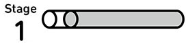
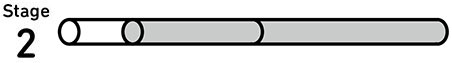
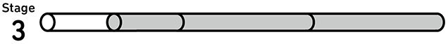
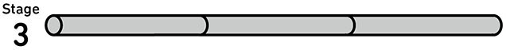

| Mr. Evineの中学英文法クイック・チェック Mr. Evineシリーズ | |
| Evine | |
| (2013) | |
参照項目から元の箇所に戻るには、お使いのビューワーの仕様に従ってください。または一旦目次を表示し、戻りたい箇所の近くの見出しをタップして戻ってください。
|
初めまして！ Evine（エヴィン）です。 この本を手にしていただき、ありがとうございます。私は神戸、大阪で「やりなおし英語 JUKU」という学校を主宰しています。主に社会人の英語の学び直しをお手伝いしているのですが、多くの生徒さんが入会時に持っている悩みを2つ、紹介しましょう。 「初めて見る英文が、すぐに理解できません。既に学んだ文法が使われているのに、なぜでしょうか」 「どんなに文法を勉強しても、実際に英語を使えるようになりません」 中学校までの英文法で基本は十分押さえているはずなのに、どうしてこんな症状が出てくるのでしょうか。 大きな原因は、文法項目ごとに出題される、正解の予測しやすい問題を解くのに慣れてしまったこと。そのため、「本当はどこまで分かっているか」「どこが理解不足なのか」を把握できていないことです。そんな学習者に必要なのは、自己点検して理解の穴（＝弱点）を発見すること。この段階なくして、真に使える文法力は身に付きません。 そこで本書では、真の理解力のチェックのため、日本人学習者が間違えやすい文法を集中的に取り上げるとともに、文法項目を順不同にシャッフルして出題しています。また、扱う英文はどれも日常生活に絡めたトピックばかりですので、ゲーム感覚で楽しみながら、正しい文法を瞬時に判断する力が鍛えられますよ。では、Let's get started! |
Contents
この本の使い方
学習スタートの前に、基本的なプロセスを押さえましょう。
3分間でできる実力判定
──ドリルの進め方
まず、問1～5を解きます。解答時間の目標は1分。※
できるだけスピーディーに、一気に5問を解くつもりで取り組みましょう。
※答え合わせや復習に要する時間は含みません。
ここが特長
「シャッフル出題」でいざ力試し！
どんな問題が出るか分からない
・カードを切り混ぜ（シャッフル）展開するように、さまざまな文法が順不同に出題されます。予測不可能な問題に素早く答えられるかどうかで、自分の本当の実力が分かります。
設問形式は3タイプ、合計270問
・Stage 1「二択問題」（90問）
・Stage 2「正誤問題」（90問）
・Stage 3「並べ替え問題」（90問）
（各 Stage のサンプル問題はこちらを参照）
レベルは中学英語
本書では英語力の核（コア）となる中学3年分の文法を主に取り上げています。この学習範囲で苦手を克服することが、大人のやり直し学習のために重要です。
5問ごとに「さくっと答え合わせ」で正解を確認します。
引き続き、問6～10を一気に解きます。
解答時間の目標は、ここでも5問で1分です。
ここが特長
問6～10の答え合わせの後、
問11～15を解いてドリル終了です。
ここが特長
ドリル1つを3分で終了
忙しくてもムリなくできる
・ドリル1つは15問。これが計3分、つまりカップラーメン級の短時間で終了します。多忙なときも、これなら無理なくできるのでは？ 昼休みや就寝前など、細切れ時間の有効活用が可能です。
・通勤時間を利用するのも良いアイデアです。例えば「1～2駅でドリル1つをこなす」を日課にすれば、文法学習が無理なく習慣化します。
自己記録のススメ
──定期的な振り返りが英語力を磨く
ドリル２つ（計30問）ごとに「記録表」が掲載されています。「さくっと答え合わせ」のページで間違った問題を振り返りこの表に転記しましょう。間違えた問題番号の横をたどっていくと白くなっているコマがありますのでそこにレを書き込みましょう。そのコマを縦軸にたどっていくと、その問題の文法項目がわかるようになっています。この「記録表」は以下のURLからダウンロードできます。ダウンロードしたファイルをプリントアウトして、実際に記入してみましょう。（http://www.alc.co.jp/dl/）
転記済みのレの合計数を縦列で足し算し、「集計」欄に書き込みましょう。どんな文法項目を何回間違ったかが分かり、補強する必要のある個所が明らかになります。
※「集計」欄にすでに印字ずみの分母は、30問中のその文法項目の出題回数を示します。
【横列】
問題番号で区切られています。
【縦列】
文法項目で区切られています。
「文法」欄の丸数字は文法を区分する番号で、「総合解説」に対応しています。
弱点を強みに変える
──「総合解説」でしっかりフォロー
間違った文法は放置せず、復習することが大切です。
理解のあやふやなところは巻末の「スキッとおまとめ 総合解説」でチェックして、基本的な文法知識を整理しましょう。
ページ上部に付いているこの大きな数字は、「さくっと答え合わせ」や「記録表」にある丸数字に該当します。
本書で取り上げた文法について、基礎知識を説明しています。
ドリルの答え合わせの際、また「記録表」で集計した後や時間の余裕があるときなど、折に触れ目を通しておきましょう。
では、実際にどんな問題が出題されるか
サンプル問題で体験してみましょう。
ざっくり おためし！ サンプル問題
この本で出題される問題の例を Stage 別に紹介します。挑戦しましょう。
Stage 1 二択問題
日本語を参照し、英文の［ ］の中にある2つの語句のうち、文法的に正しい方を選びましょう。
私は将来的には海外で働きたいと思っています。
I want to work［ overseas｜ in overseas］ sometime in the future.
Stage 2 正誤問題
下の英文には間違いが1語含まれています。それはどこ？ 日本語を参照して、間違っている語に下線を引きましょう。
普段、仕事帰りにはどこへ飲みに行ってるの？
What do you usually go for a drink after work?
Stage 3 並べ替え問題
日本語を参照して①～④の語句を正しく並べ替え、 に入る語句の番号を選びましょう。
私のいとこは私より上手にギターを弾きます。
My cousin plays the .
［ ①me ②guitar ③than ④better］
答えは次のページ
さくっと 答え合わせ
問題の次に、このように正解と解説が掲載されています。
Stage 1
［正解］overseas
○ I want to workoverseas sometime in the future.
副詞⑦ overseas は「海外で」という意味の副詞。副詞は単独で動詞を修飾します。よって、work overseas で「海外で働く」という意味になり、場所を表す前置詞 in（～の中で）は必要ありません。
Stage 2
［正解］ （誤）What→（正）Where
○Where do you usually go for a drink after work?
疑問詞⑩ 「どこへ?」と聞いているので、場所を尋ねる疑問詞where で始める英文に修正する必要があります。what は「何を?」を問う疑問詞なので、ここでは不適切です。
Stage 3
［正解］ ④better ①me
○ My cousin plays the guitarbetter thanme.
比較級・比較表現⑳ 「～より上手に」と、「いとこ」と「私」を比較しています。well（上手に）の比較級 better（より上手に）と、比較対象を表すthan（～より）を better than ～ の語順になるよう並べましょう。
Stage 1 から本番開始です！
Stage 1の進め方
Stage 1 では二択問題に挑戦します。2つの語句のうち、どちらがその英文に当てはまるかをスピーディーに判断して、選んでいく問題です。
解き方
日本語を参照し、英文の［ ］ の中にある2つの語句のうち、文法的に正しい方を選びましょう。
ドリルの進め方
問1～5▶答え合わせ → 問6～10▶答え合わせ → 問11～15▶答え合わせ
・このように、5問解くごとに答え合わせをします。答え合わせが終わったら、すぐ次の5問に進みましょう。
・5問を1分以内に解くのが目標です。できるだけ止まらず、スピーディーに解けるかどうか挑戦してみてください。
答え合わせのしかた
正解に続く解説では、その問題でどんな文法が問われたかが、「動詞③」などのマークで示されています（③などの丸数字は、「総合解説」に対応します）。
・間違った問題を「記録表」（ダウンロードセンターよりダウンロードできます。詳細は「自己記録のススメ」参照）に照らすと、苦手な文法の傾向が分かります（詳しい照合方法は、「記録表」の指示を参照してください）。
ドリル 1
目標タイム
1分
2つの語句のうち正しい方を選びましょう。
1 私たちはロンドンに1週間滞在しました。
We stayed[ in| on] London for a week.
2 香港支社には日本語を話す人が全然いませんでした。
There[ not were| weren't] any Japanese speakers at the Hong Kong branch.
3 うわあ、君のお母さんはBMWを運転しているんだね！
Wow, your mom[ drives| driving] a BMW!
4 私はイチゴを3パック購入しジャムを作りました。
I bought three packs of[ strawberry| strawberries] and made some jam.
5 「私のノートパソコンはどこ？」「おー、君が上に座ってるよ！」
"[ What's| Where's] my laptop?"
"Oh, you're sitting on it!"
さくっと 答え合わせ
1
［正解］in
○ We stayedin London for a week.
前置詞のキホン⑬ 内部にいることを表す前置詞inが正解です。「in＋場所」で「〜の中で、〜の中に」の意味。
2
［正解］weren't
○ Thereweren't any Japanese speakers at the Hong Kong branch.
紛らわしい文のカタチ④ 「（ある不特定の名詞）がいる・ある」という「存在」を表すThere＋be動詞＋名詞は、否定文ではbe動詞の直後にnotを付けます。be動詞の種類は直後の名詞の数と文の時制に合わせること。
3
［正解］drives
○ Wow, your momdrives a BMW!
動詞③ 「日常習慣」を表す現在形drivesが正解。一般動詞のカタチを判断するときは主語に着目。your momは3人称単数なので、それを受ける一般動詞の語尾には-(e)sが付きます。
4
［正解］strawberries
○ I bought three packs ofstrawberries and made some jam.
名詞の「数」① strawberryは可算名詞。1パックに複数のイチゴが入っているので複数形strawberries が正解。ちなみにjamは不可算名詞です。
5
［正解］Where's
○ "Where's my laptop?" "Oh, you're sitting on it!"
疑問詞⑩ 「どこ？」と場所を尋ねる疑問詞whereがカギ。Where'sは Where isの短縮形。疑問詞の後ろは通常の疑問文の語順になります。
ドリル 1
目標タイム
1分
どんどん解いて、調子をつかみましょう。
6 僕は妻の誕生日のためにいくつか計画があるんです。
I have[ any| some] plans for my wife's birthday.
7 私たちは彼の家を探しているの。
We're looking for[ his| him] house.
8 3日前の夜、あなたは配偶者と一緒に自宅にいましたか。
[ Did| Were] you at home with your husband three nights ago?
9 「荷物を預かっていただけますか」「結構ですよ」
"Could you keep my[ luggages| luggage]?" "Sure."
10 テーブルで支払うんでしょうか。
Do I pay[ in| at] the table?
さくっと 答え合わせ
6
［正解］some
○ I havesome plans for my wife's birthday.
形容詞⑥ some＋可算名詞の複数形のカタチを押さえましょう。someは主に肯定文で用い、可算名詞に付くと「いくつかの」、不可算名詞に付くと「いくらかの」という意味になります。
7
［正解］his
○ We're looking forhis house.
代名詞⑧ house の所有者を表す所有格の代名詞が必要ですね。一方、himは目的格の代名詞。look for his house（彼の家を探す）とlook for him（彼を探す）の違いに注意。
8
［正解］Were
○Were you at home with your husband three nights ago?
動詞③ be動詞＋場所を表す表現で「（主語が）〜にいる・ある」の意味です。be動詞の疑問文なので語順は「be動詞＋主語...?」。
9
［正解］luggage
○ "Could you keep myluggage?" "Sure."
名詞の「数」① luggage（baggageでも同意）は「手荷物類」を集合的に表す不可算名詞。カバンがいくつあっても、luggages（×）とは言いません。
10
［正解］at
○ Do I payat the table?
前置詞のキホン⑬ 「〜において」と地点を表す前置詞atが正解です。inは基本的に「〜の中で、〜の中に」と「内部」を表すため、ここでは不適切。
ドリル 1
目標タイム
1分
さあ、ドリル1最後の5問です。
11 そのレストランには、厳しいドレスコードなんてありますか。
Is there[ the| a] strict dress code at the restaurant?
12 彼のお姉さん（妹さん）はスペイン語が話せます。
His sister[ can| won't] speak Spanish.
13 当社の試作品のいくつかを紹介させてください。
Let me show you[ any| some] of our sample products.
14 時間がなくて、友人たちと外食を楽しめませんでした。
I didn't have time to enjoy[ to eat| eating] out with my friends.
15 コーヒー1杯とチョコレートマフィン1個をください。
Can I have a coffee[ and| or] a chocolate muffin, please?
さくっと 答え合わせ
11
［正解］a
○ Is therea strict dress code at the restaurant?
名詞に付くパーツ② 不特定の名詞の存在の有無を問う表現なので、不定冠詞aが正解。特定の名詞を表す定冠詞theはこの場合は不適切です。
12
［正解］can
○ His sistercan speak Spanish.
助動詞⑪ 「話せます」とはその能力があるということ。「能力」を表す助動詞canが適切です。won'tはwill not（...しないだろう）の短縮形ですね。
13
［正解］some
○ Let me show yousome of our sample products.
代名詞⑧ some of＋可算名詞の複数形で「〜のうちのいくつか」という意味。一方、肯定文で使われるanyは「どれでも」という意味になるので、文意に合わず不適切。
14
［正解］eating
○ I didn't have time to enjoyeating out with my friends.
不定詞と動名詞の違い⑰ enjoy＋動名詞で「...するのを楽しむ」。他動詞enjoy（〜を楽しむ）の目的語に、動詞eat（食べる）を名詞に変えた動名詞eating（食べること）を用いたカタチ。なお、enjoyの目的語にto不定詞を用いることはできません。
15
［正解］and
○ Can I have a coffeeand a chocolate muffin, please?
接続詞⑫ 「AとB」という合体・連結を表す接続詞andが正解。orを選ぶと「AかB」の「選択」の意味になってしまいます。
ドリル 2
目標タイム
1分
ドリル1同様、正しい選択肢を選びましょう。
1 すべての訪問者が何か証明できるものを見せ、入り口で記名しなければいけません。
All visitors[ have| must] show some ID and sign in.
2 「新しい仕事は前のよりいいですか」「うん、いいと思うよ」
"Is your new job[ good| better] than the old one?" "Yeah, I think so."
3 その喫茶店は1960年からずっと神戸にありますよ。
The café[ was| has been] in Kobe since 1960.
4 友人が結婚式でこの写真を撮ってくれたんだ。
A friend of mine[ took| takes] this photo at our wedding.
5 その映画の割引券はありますか。
Do you have[ few| any] discount tickets for the movie?
さくっと 答え合わせ
1
［正解］must
○ All visitorsmust show some ID and sign in.
mustとhave to⑲ 義務を表すmust（...しなければならない）。haveを用いて同じ意味を表すにはhaveto showのカタチが必要です。
2
［正解］better
○ "Is your new jobbetter than the old one?" "Yeah, I think so."
比較級・比較表現⑳ 比較対象を表すthan（〜より）に着目しましょう。形容詞good（良い）の比較級better（より良い）がカギ。your new job（あなたの新しい仕事）とthe old one（前の仕事）の比較です。
3
［正解］has been
○ The caféhas been in Kobe since 1960.
現在完了形㉒ 現在完了形の継続用法（〜以来ずっと...である、〜以来ずっと...している）です。前置詞sinceは「いつから」という時の起点を表します。過去形wasは現在までの継続を表さないため不適切です。
4
［正解］took
○ A friend of minetook this photo at our wedding.
動詞③ 「撮ってくれた」は過去の出来事なので、不規則変化動詞take の過去形tookが正解。時制を常に意識しましょう。
5
［正解］any
○ Do you haveany discount tickets for the movie?
形容詞⑥ 割引券があるかどうかを尋ねた疑問文。名詞・名詞句の直前に置いて数量を問う形容詞any（いくつかの、いくらかの）がポイント。肯定文で「いくつかの、いくらかの」を表すには主にsomeが使われます。
ドリル 2
目標タイム
1分
次の5問、さくさく行きますよ！
6 誰かこのコピー機を修理できる人はいますか。
Is there anyone[ they| who] can fix this copier?
7 その博物館まで、いくらですか。
[ How| That] much is it to the museum?
8 準備できたときに知らせてください。
Let me know[ by| when] you're ready.
9 私の子どもは牛乳やその他の乳製品にアレルギーがあります。
My kid is allergic to[ milk| milks] and other dairy products.
10 あなたがロンですよね。
You're Ron,[ don't| aren't] you?
さくっと 答え合わせ
6
［正解］who
○ Is there anyonewho can fix this copier?
関係代名詞㉓ 人を表す先行詞anyoneにつながる主格の関係代名詞whoが正解です。
7
［正解］How
○How much is it to the museum?
疑問詞⑩ 金額を尋ねるにはhowを使ったHow much is 〜?（〜はいくらですか）が定番表現。ちなみにここでの代名詞itは「博物館までの行程」を指します。
8
［正解］when
○ Let me knowwhen you're ready.
接続詞⑫ 時を表す接続詞whenは「when＋主語＋動詞」の語順で使います。byは時を表す名詞とともに用いて、「〜までに」を表す前置詞なので不適切。
9
［正解］milk
○ My kid is allergic tomilk and other dairy products.
名詞の「数」① 液体であるmilk（牛乳）は「数」の概念がない不可算名詞。そのため複数形milks（×）は誤り。
10
［正解］aren't
○ You're Ron,aren't you?
紛らわしい文のカタチ④ 確認や同意を求める付加疑問文。基本文（主節）（ここではYou're Ron）が肯定文であれば、付加部分は「動詞の否定形＋主語（代名詞）?」のカタチにします。
ドリル 2
目標タイム
1分
さあ、ラストスパートです。
11 私の夢はライターになることです。
My dream is[ be| to be] a writer.
12 ばんそうこうがいるよ。あなたのカバンに何枚かある？
I need a Band-Aid. Do you have[ any| anything] in your bag?
13 ご多忙で来ていただけなければ、私が帰りにあなたの事務所に寄ることもできますよ。
If you are too busy to visit us, I[ can| had to] drop by your office on my way home.
14 早く良くなるといいですね。
I hope[ that| to] you get better soon.
15 その免許状はもう受け取ったの？
[ Have you received| Will you receive] the certificate yet?
さくっと 答え合わせ
11
［正解］to be
○ My dream isto be a writer.
不定詞⑮ 名詞的用法の不定詞to be a writer（ライターになること）が補語の働きをして、主語my dream（私の夢）の内容を表したカタチです。
12
［正解］any
○ I need a Band-Aid. Do you haveany in your bag?
代名詞⑧ 疑問文では代名詞anyを動詞の目的語として単独で用いることができます。ここでは他動詞have（〜を持っている）の目的語で、「いくつか持っているかどうか」を尋ねる文意。anythingは「何か」という意味なので、文意に合わず不適切です。
13
［正解］can
○ If you are too busy to visit us, Ican drop by your office on my way home.
助動詞⑪ 可能性の助動詞canで「...できる」を表します。have to do は「...しなければならない」という「義務」の意味。
14
［正解］that
○ I hopethat you get better soon.
接続詞⑫ hope that ...で「...を願う」の意味。that節が他動詞hope の目的語になっています。なお、この接続詞thatは省略可です。
15
［正解］Have you received
○Have you received the certificate yet?
現在完了形㉒ 「もう...してしまった」と完了を表す現在完了形の疑問文です。ちなみに疑問文での副詞yetは「もう（...しましたか）」という意味。
ドリル1＆2 記録表
・ドリル1とドリル2で間違った問題を振り返り、間違えた問題はその問題番号の横の行の白いコマにレを書き込みましょう。白いコマを下にたどっていくと、その問題がどの文法項目に相当するかがわかります。
・レをいれた問題の合計数を縦列で足し算して、下の「集計」欄に書きいれましょう。今回どんな文法項目を何回間違ったかがわかります。
・間違った問題は「総合解説」も参考にして復習しておきましょう。
・記入するには、ダウンロードセンター（http://www.alc.co.jp/dl/）でダウンロードしたファイルをプリントアウトして使用してください。
まごころEvine流！
今日のひとこと
「要領良く」は置いといて、
ゼロからスタートしましょう！
細切れの時間になんとか勉強しようと努力する忙しい社会人学習者にとって、「要領良く」「器用に」「最短距離で」学びたいというのが本音ではないでしょうか。しかし、そのために「どこから始めれば効率がいいか」考えすぎて、足踏みしていては時間の無駄です。というのも、最初から自分の実力を把握できている人はほとんどいないからです。
まずは、中学1年レベルの演習から始めましょう。これが、遠回りのように見えて、実は近道です。たかが中学レベルと思うかもしれませんが、侮れませんよ。実際に問題を解いてみて、間違えながら知識を整理していくことが大切です。
ドリル 3
目標タイム
1分
2つの語句のうち正しい方を選びましょう。
1 日本へは一度も行ったことがないけど、日本語をいくつか知ってるよ。
I know a few Japanese phrases,[ so| though] I've never been to Japan.
2 うちのじいちゃんは髪をピンクに染めるには年を取り過ぎてるよ。
My grandfather is[ too old to| so old that] dye his hair pink.
3 ビール飲み終わっちゃった。もう１杯もらおう。
I've finished my beer. I'll have[ other| another].
4 リサは午後3時まで戻らないでしょう。
Risa[ won't| won't to] be back till 3 p.m.
5 そこに着くまで、どれくらい時間がかかりますか。
How long does[ it| much] take to get there?
さくっと 答え合わせ
1
［正解］though
○ I know a few Japanese phrases,though I've never been to Japan.
接続詞⑫ though（althoughとも言う）には「...だけれども」という譲歩の意味があり、ここでは相手にとって意外な情報を加えています。
2
［正解］too old to
○ My grandfather istoo old to dye his hair pink.
不定詞⑮ too 形容詞＋to doは「あまりに［形容詞］で...できない」の定型表現。can't do（...できない）のニュアンスを含みます。
3
［正解］another
○ I've finished my beer. I'll haveanother.
代名詞⑧ anotherは不特定の「もう1つ、もう1人」を指します。ここでは代名詞として単独で、他動詞have（〜を飲む）の目的語になっています。other（他の）は1語では使われないので不適切。
4
［正解］won't
○ Risawon't be back till 3 p.m.
未来または意志⑤ 未来の推量を表す助動詞will（...するだろう）の否定形won't（＝will not）（...しないだろう）。直後の動詞は原形です。
5
［正解］it
○ How long doesit take to get there?
主語になるit⑨ 所要時間をHow long ...?（どれくらい長く...ですか）で尋ねた疑問文。このように、itには所要時間を表す主語としての働きがあります。なお、「他動詞take＋時間」は「［時間］がかかる」という意味です。
ドリル 3
目標タイム
1分
スピーディーに解きまくりましょう。
6 ご主人はお子さんの世話を十分に手伝ってくれますか。
[ Is| Does] your husband help enough with your children?
7 これは誰の靴下ですか。
[ Who| Whose] socks are these?
8 カップケーキを10個焼いたところです。いくつかいかがですか。
I've just baked 10 cupcakes. Would you like[ something| some]?
9 火事が起きたとき、まず何をすべきか分かりませんでした。
When the fire broke out, I didn't know what[ needs| to] do first.
10 ロンドンにいらしたら、ぜひとも私たちに会いに来ないといけませんよ。
You[ must| mustn't] come and see us when you visit London.
さくっと 答え合わせ
6
［正解］Does
○Does your husband help enough with your children?
動詞③ 一般動詞なので、IsではなくてDoesで始まる疑問文が正解。
7
［正解］Whose
○Whose socks are these?
疑問詞⑩ whose（誰の）はwhoの所有格で、所有者を尋ねます。whose＋名詞のカタチが正解です。
8
［正解］some
○ I've just baked 10 cupcakes. Would you likesome?
代名詞⑧ some（いくつか）は、特に肯定的な返答を期待して相手に何かを勧めるときによく使われる代名詞。somethingは「あるもの、何か」の意味で不適切。
9
［正解］to
○ When the fire broke out, I didn't know whatto do first.
疑問詞⑩ 疑問詞＋不定詞で名詞句になるので、what to do（何をすべきか）は他動詞know（〜が分かる）の目的語になっています。
10
［正解］must
○ Youmust come and see us when you visit London.
mustとhave to⑲ 相手への強い勧めを表す助動詞must（ぜひ...しなさい）が正解。mustn'tなら「...してはいけない」という「禁止」の意味になり、不適切です。
ドリル 3
目標タイム
1分
このドリルのラスト5問。さくっと仕上げましょう。
11 私のパソコンが突然動かなくなったので、再起動しました。
My computer suddenly stopped[ to work| working], so I rebooted it.
12 その大雪の後、天気は少しずつひどくなりました。
After the heavy snow, the weather slowly got[ worse| worst].
13 「このホテルに勤めてどれくらいですか」「もう20年です」
"How long[ have you worked| will you work] for this hotel?" "For the past 20 years."
14 その節はシェークスピアによって書かれたものではありませんでした。
That passage wasn't[ writing| written] by Shakespeare.
15 さくらんぼビールはビールというよりむしろジュースのような味がします。
Cherry beer tastes[ more| much] like juice than beer.
さくっと 答え合わせ
11
［正解］working
○ My computer suddenly stoppedworking, so I rebooted it.
不定詞と動名詞の違い⑰ stop＋動名詞（...するのをやめる）とstop to do（...するために立ち止まる）の意味の違いにはくれぐれも注意。
12
［正解］worse
○ After the heavy snow, the weather slowly gotworse.
比較級・比較表現⑳ 「get＋形容詞」（...になる）を基に、形容詞bad（悪い）の比較級worse（より悪い）を用いた表現です。
13
［正解］have you worked
○ "How longhave you worked for this hotel?" "For the past 20 years."
現在完了形㉒ 現在完了形の継続用法を基に、継続期間の長さを疑問文How long ...?（どれくらいの間...ですか）で尋ねています。will you workだと未来の予定を尋ねることになり、不適切です。
14
［正解］written
○ That passage wasn'twritten by Shakespeare.
受け身⑱ 受け身の過去形「was＋過去分詞」（...された）の否定文wasn't＋過去分詞（...されなかった）です。「by＋人」（［人］によって）で動作主を指します。
15
［正解］more
○ Cherry beer tastesmore like juice than beer.
比較級・比較表現⑳ more like A than B（BというよりむしろA）がカギ。比較対象を表すthanもヒントに。ちなみに、このlikeは「〜のようで、〜に似ていて」という意味の前置詞です。
ドリル 4
目標タイム
1分
引き続き、正しい選択肢を選びましょう。
1 僕はまだ彼女のeメールに返事をしていません。
I [ replied| haven't replied] to her e-mail yet.
2 このカレーライス1皿で、かなりのボリュームだね。全部食べないとダメ？
This curry and rice dish looks quite large. Do I[ have to| must] eat it all?
3 ここに違法に駐車された車両はレッカー移動されるでしょう。
Cars[ are parking| parked] illegally here will be towed away.
4 鼻をかむのにハンカチを使いますか。
[ Do| Are] you use a handkerchief to blow your nose?
5 ヨシオが忙しそうだったので、アイナは彼を訪ねませんでした。
Aina didn't visit Yoshio[ because| so] he looked busy.
さくっと 答え合わせ
1
［正解］haven't replied
○ Ihaven't replied to her e-mail yet.
現在完了形㉒ not ... yet（まだ...していない）の組み合わせから、現在完了形の完了用法を用いた未完了の表現と判断しましょう。
2
［正解］have to
○ This curry and rice dish looks quite large. Do Ihave to eat it all?
mustとhave to⑲ have to doを含む疑問文は一般動詞の場合と同様、do/doesを文頭に付けます。助動詞mustを含む疑問文なら、Must I ...?の語順です。
3
［正解］parked
○ Carsparked illegally here will be towed away.
名詞に付くパーツ② 「...された」という意味の過去分詞-edを含む parked illegally here（ここに違法に駐車された）が形容詞句となり、後ろから名詞carsを修飾しています。
4
［正解］Do
○Do you use a handkerchief to blow your nose?
動詞③ be動詞ではなく一般動詞useを含む疑問文なので「Do＋主語＋動詞の原形...?」に。ここでは主語youを受けて「日常習慣」を尋ねるため現在形でdoを用います。
5
［正解］because
○ Aina didn't visit Yoshiobecause he looked busy.
接続詞⑫ he looked busy（彼は忙しそうだった）という理由・原因の節を導く、接続詞becauseが正解。接続詞soは前文の「理由・原因」を受けて結果の節を導くため、文意に合いません。
ドリル 4
目標タイム
1分
1分と言わず、30秒くらいで5問行きたいもの。
6 山頂まで行くにはこのルートを取るのが一番安全です。
This route is the[ safest| safer] to take to the summit.
7 テッドはケイトをデートに誘いたいと思っています。
Ted wants[ asking| to ask] Kate out.
8 トビーはちょうど皿ふきを終えたところです。
Toby[ has yet| has just] finished drying the dishes.
9 そのミュージシャンのファンたちは新曲が聴けてとても興奮していました。
The musician's fans were really[ exciting| excited] at the new song.
10 「彼女の送別会はいつ催されるんですか」「近いうちにお知らせしますね」
"When[ will| is] her farewell party take place?" "I'll tell you soon."
さくっと 答え合わせ
6
［正解］safest
○ This route is thesafest to take to the summit.
最上級㉑ 「一番...な」を表すには最上級のthe -estが必要です。
7
［正解］to ask
○ Ted wantsto ask Kate out.
不定詞と動名詞の違い⑰ 他動詞want（〜したい）は不定詞to doを目的語にとります。「ask＋人＋out」は「［人］をデートに誘う」。
8
［正解］has just
○ Tobyhas just finished drying the dishes.
現在完了形㉒ 副詞just（ちょうど...したばかりで）を用いた現在完了形の完了用法です。yetは否定文で「まだ（...していません）」、疑問文で「もう（...しましたか）」の意味。
9
［正解］excited
○ The musician's fans were reallyexcited at the new song.
形容詞⑥ 他動詞excite（〜を興奮させる）の-ed形excited（興奮した）が、主語の様子や気持ちを表す形容詞に転じたものです。excitingは「興奮させる、刺激的な」という意味の形容詞で、文意に合いません。
10
［正解］will
○ "Whenwill her farewell party take place?" "I'll tell you soon."
未来または意志⑤ 未来推量を表すwill（...するだろう）が正解。take placeは「開催される」という意味。「される」と言っても受け身のカタチにはなりません。うっかりisを選ばないよう要注意。なお、返答のI'llに含まれるwillはその場で即座に判断される話し手の意志（...しよう、...します）を表します。
ドリル 4
目標タイム
1分
いいですね、調子出てきましたね！
11 あなたは普段（お酒を）飲まないよね。
You don't drink usually, [ are| do] you?
12 昨日は遅れてごめんね。
I'm sorry[ which| that] I was late yesterday.
13 特急あさまの指定席を取ってもらっていいですか。
Can I ask you[ to reserve| reserve] a seat on the Asama Express?
14 アメリカで誰が一番お金持ちなの？
Who's got the[ most| much] money in the U.S.?
15 問題は私がパスワードを忘れたことです。
The problem is[ that| which] I forgot my password.
さくっと 答え合わせ
11
［正解］do
○ You don't drink usually,do you?
紛らわしい文のカタチ④ 確認や同意を求める付加疑問文。否定形don't drinkに対応し、付加部分は肯定形の「do＋主語（代名詞）?」です。
12
［正解］that
○ I'm sorrythat I was late yesterday.
接続詞⑫ be sorry that ...（...して申し訳なく思う）。感情を表す形容詞とともに用いる接続詞thatがカギ。なお、このthatは省略可能です。
13
［正解］to reserve
○ Can I ask youto reserve a seat on the Asama Express?
不定詞⑮ 不定詞を使用したask＋人＋to doで「...するよう［人］に頼む」の意味。なお、他動詞ask（［人］に頼む）の目的語youは、不定詞to reserveの意味上の主語でもあります。
14
［正解］most
○ Who's got themost money in the U.S.?
最上級㉑ 形容詞many/much（たくさんの）の最上級は不規則変化でmostになります。なお、比較級ならmoreです。
15
［正解］that
○ The problem isthat I forgot my password.
接続詞⑫ 主語the problem（問題）の内容を表す補語にthat節（...ということ）を用いた文。that I forgot my password（私がパスワードを忘れたこと）がひとまとまりの名詞として働いています。
ドリル3＆4 記録表
・ドリル3とドリル4で間違った問題を振り返り、間違えた問題はその問題番号の横の行の白いコマにレを書き込みましょう。白いコマを下にたどっていくと、その問題がどの文法項目に相当するかがわかります。
・レをいれた問題の合計数を縦列で足し算して、下の「集計」欄に書きいれましょう。今回どんな文法項目を何回間違ったかがわかります。
・間違った問題は「総合解説」も参考にして復習しておきましょう。
・記入するには、ダウンロードセンター（http://www.alc.co.jp/dl/）でダウンロードしたファイルをプリントアウトして使用してください。
まごころEvine流！
今日のひとこと
大人の英会話に、最低限の
文法知識は欠かせません。
英語で会話するとき、単語を並べれば「表面的」なことは「なんとなく」伝わった気になります。でも、豊かな会話にはまずなりません。文法知識で肉付けしなければ、真意を相手に伝えることはできないのです。例えば、「免許がなくて運転できない」は「普段は運転しない」と事情が異なりますよね。こんなとき、can't（...できない）を適切に使いたいものです。
英文法を使いこなせば、自分の気持ちや状況が適切に説明できます。だから、ぜひ丁寧に学んでいきたいですよね。

ドリル 5
目標タイム
1分
当てはまる語句を選びましょう。
1 僕のパソコンのOSはWindows 8です。あなたのは？
The operating system on my computer is Windows 8.
What is[ yours| you]?
2 私はMBA（経営学修士号）を取得するために留学したいと思っています。
I'd like to study[ in abroad| abroad] for an MBA.
3 これが僕が昨日、君に話した本です。
This is the book[ it| that] I told you about yesterday.
4 あなたの赤ちゃんはなんて寝付きが早かったのでしょう！
[ How| What] quickly your baby fell asleep!
5 このスープには何が入っているの？
[ What's| How's] in this soup?
さくっと 答え合わせ
1
［正解］yours
○ The operating system on my computer is Windows 8. What isyours?
代名詞⑧ ここでの所有代名詞yours（あなたのもの）は「所有格の代名詞your（あなたの）＋名詞operating system on the computer（パソコンのオペレーティング・システム、OS）」を言い換えたもの。
2
［正解］abroad
○ I'd like to studyabroad for an MBA.
副詞⑦ 場所を表す副詞abroad（外国で）は「前置詞in（［場所］で）＋名詞a foreign country（外国）」と同じ。つまりabroad 1語にinの機能が既に含まれているので、in abroad（×）は間違い。
3
［正解］that
○ This is the bookthat I told you about yesterday.
関係代名詞㉓ I told you about〜（私はあなたに〜について話した）の前置詞aboutの目的語を、目的格の関係代名詞thatで言い換えています。
4
［正解］How
○How quickly your baby fell asleep!
命令・提案・感嘆⑭ 感嘆文のHow＋副詞＋主語＋動詞!のカタチ。「What （a/an）＋形容詞＋名詞＋主語＋動詞!」との違いに注意。
5
［正解］What's
○What's in this soup?
疑問詞⑩ 主語の働きを兼ね備える疑問詞whatがカギ。What'sはWhat isの短縮形。howは「方法・手段」や「程度」などを尋ねるので不適切。
ドリル 5
目標タイム
1分
スピードを上げて解いていきましょう。
6 ここであなたに会うなんて思ってなかったよ。
I didn't expect[ seeing| to see] you here.
7 この書類のコピーをいただけませんか。
[ Could| May] you give me a copy of this document?
8 私の上司は私の2倍お酒を飲みます。
My boss drinks[ as twice| twice as] much as I do.
9 僕はキャシーのノートパソコンを壊してしまった。それで彼女は僕のことすごく怒ってるんだ。
I [ am breaking| have broken] Cathy's laptop. Now she's very mad at me.
10 私は犬を散歩させるために早起きしないといけませんでした。
I had to get up early[ to walk| to walking] my dog.
さくっと 答え合わせ
6
［正解］to see
○ I didn't expectto see you here.
不定詞と動名詞の違い⑰ 他動詞expect（〜を期待する）は不定詞を目的語にとります。動名詞を目的語にとることはありません。
7
［正解］Could
○Could you give me a copy of this document?
助動詞⑪ 依頼の表現Could you ...?（...してもらえませんか）がカギです。mayは相手を主語とする「依頼」の表現では用いないため、不適切。
8
［正解］twice as
○ My boss drinkstwice as much as I do.
比較級・比較表現⑳ 倍数表現twice as ... as〜（〜の2倍...だ）は語順がキメ手。3倍以上なら[ ] times as ... as〜（〜の[ ]倍...だ）となりますよね。[ ]にはthree、fourなど数が入ります。
9
［正解］have broken
○ Ihave broken Cathy's laptop. Now she's very mad at me.
現在完了形㉒ 現在完了形の結果用法が正解。「壊した」結果として「今現在、彼女が怒っている」という因果関係から判断しましょう。am breaking（壊しているところだ）は文意に合いません。
10
［正解］to walk
○ I had to get up earlyto walk my dog.
不定詞⑮ 目的（...するために）を表す副詞的用法の不定詞が正解。なお、他動詞walkは「［犬など］を散歩させる」という意味です。
ドリル 5
目標タイム
1分
もうだいぶ慣れたのでは？ その調子です。
11 この本は僕には難しすぎると言う人もいます。
[ Some| Any] say this book is too difficult for me.
12 チョコレートのしょうゆ添えなんて、世界最悪のレシピに違いありません。
Chocolate with soy sauce must be the[ worse| worst] recipe in the world.
13 「君はいつ間食するの？」「妻が寝てからさ」
"[ What| When] do you snack?"
"After my wife goes to bed."
14 アンディは写真を撮るのが大好きです。
Andy loves[ take| taking] photos.
15 新しい店長は食品業界での経験が私より少ないです。
The new store manager has[ least| less] experience in the food business than me.
さくっと 答え合わせ
11
［正解］Some
○Some say this book is too difficult for me.
代名詞⑧ この代名詞someは「一部の人々」という意味。othersとともに用いられSome .... Others 〜. （...する人もいれば、〜する人もいる）という対比表現になることもあります。
12
［正解］worst
○ Chocolate with soy sauce must be theworst recipe in the world.
最上級㉑ 形容詞bad（悪い）の最上級worst（最悪な）がポイント。比較級worse（より悪い）だと文意に合わず不適切です。
13
［正解］When
○ "When do you snack?" "After my wife goes to bed."
疑問詞⑩ 時を尋ねる疑問詞when（いつ）が正解。what（何）だと間食のメニューを尋ねることになり、文脈に合いません。
14
［正解］taking
○ Andy lovestaking photos.
動名詞⑯ 他動詞love（〜が大好きだ）の目的語となる動名詞takingが正解。なお、love takingは不定詞を用いてlove to takeと言い換えることも可能です。
15
［正解］less
○ The new store manager hasless experience in the food business than me.
比較級・比較表現⑳ 比較対象を表すthan me（私より）から比較級がカギと判断しましょう。形容詞little（少ない）の比較級less（より少ない）が正解。least（最も少ない）はlittleの最上級。
ドリル 6
目標タイム
1分
Stage 1で最後のドリル。引き続き、正しい方を選びましょう。
1 これらのコースからどれでも無料で受講することができます。
You can take[ that| any] of these courses for free.
2 ディズニーランドとユニバーサルスタジオ、あなたにとってどちらの方がより魅力的ですか。
[ Which| What] is more attractive to you, Disneyland or Universal Studios?
3 彼は日本語以外は何語も話せません。
He[ can't| has to] speak any other language apart from Japanese.
4 僕はアンのお兄さん（弟さん）と以前どこかで会った記憶があります。
I remember[ to see| seeing] Ann's brother somewhere before.
5 その部屋はあと3人と共有できるくらい広いですよ。
The room is[ enough large| large enough] for you to share with three other people.
さくっと 答え合わせ
1
［正解］any
○ You can takeany of these courses for free.
代名詞⑧ 肯定文で用いられる代名詞anyは「どれでも」という意味。ここでは他動詞take（〜を選ぶ、〜を受講する）の目的語になっています。
2
［正解］Which
○Which is more attractive to you, Disneyland or Universal Studios?
疑問詞⑩ 選択肢を並べてA or B（AかBか）と尋ねる場合、疑問詞はwhich（どちら）が適切。what（何）には対比の機能がありません。
3
［正解］can't
○ Hecan't speak any other language apart from Japanese.
助動詞⑪ 「能力」を表す助動詞canは否定形can't（＝cannot）で「...することができない」という意味になります。has to speakは「話さなければならない」という意味なので不適切。
4
［正解］seeing
○ I rememberseeing Ann's brother somewhere before.
不定詞と動名詞の違い⑰ remember seeingで「会ったことを覚えている」、remember to seeで「会うことを覚えている、忘れずに会う」という意味。このように、動名詞には過去の出来事のニュアンスがあります。
5
［正解］large enough
○ The room islarge enough for you to share with three other people.
不定詞⑮ 形容詞＋enough＋to do（...するのに十分なほど［形容詞］である）は「十分な〜」の「enough＋名詞」とは語順が異なるので注意。
ドリル 6
目標タイム
1分
ノッてきましたね。スピーディーに進みましょう。
6 私たちは大阪のどのたこ焼き屋よりも、「金たこ」でよく食べます。
We eat atKin-Tako more often[ at the other| than any other]takoyaki restaurant in Osaka.
7 ここに駐車してはいけません。
You[ can't| haven't] park your car here.
8 日本で最も重要な仏教の年中行事は何ですか。
What is the[ most| more] important annual Buddhist event in Japan?
9 あなたの意見を拒む人もいれば、あなたを応援してくれる人もいるでしょう。
Some will reject your opinions. [ Others| Anyone] will support you.
10 何時にチェックインできますか。
What time[ can| have] I check in?
さくっと 答え合わせ
6
［正解］than any other
○ We eat atKin-Tako more oftenthan any othertakoyaki restaurant in Osaka.
比較級・比較表現⑳ 比較級＋than＋any other単数名詞で「ほかのどの［名詞］よりも...だ」。意味としては最上級（最も...だ）と同様です。
7
［正解］can't
○ Youcan't park your car here.
助動詞⑪ 「許可」を表す助動詞canは否定形can't（＝cannot）で「...してはいけない」という不許可を表します。
8
［正解］most
○ What is themost important annual Buddhist event in Japan?
最上級㉑ 「最も...だ」と最上級を表す(the)most＋形容詞の原級が正解。moreは比較級。importantのように3音節（im-、-por-、-tant）以上の語は基本的に最上級には (the) mostが用いられます。音節とは母音を中心とした音のまとまり（区切り）を指します。
9
［正解］Others
○ Some will reject your opinions.Others will support you.
代名詞⑧ 不特定の「別の人々、別の物」を表す代名詞othersが正解。Some .... Others 〜.（...する人もいれば、〜する人もいる）という定型表現もカギ。anyoneは「誰もが」という意味で、文意に合いません。
10
［正解］can
○ What timecan I check in?
助動詞⑪ canを用いて許可を求める表現。ちなみにここでのcanはより丁寧な表現ではcouldやmayに言い換え可能です。
ドリル 6
目標タイム
1分
Stage 1で最後の5問。ラストスパートです。
11 先週のニューヨークへのフライトはどうだった？
How was[ the| a] flight to New York last week?
12 4人兄弟のうち1人は外出し、他は皆、家で過ごしました。
One of the four brothers went out while[ the other| the others] stayed at home.
13 その映画はひどく退屈でした。
The movie was terribly[ boring| bored].
14 明日は雨でしょう。
It will rain[ tomorrow| yesterday].
15 その頭どうしたの？ 鳥の巣みたい。
[ How| What] happened to your hair? It looks like a bird's nest.
さくっと 答え合わせ
11
［正解］the
○ How wasthe flight to New York last week?
名詞に付くパーツ② 何の話題か互いに共有している情報なので、定冠詞theが正解。「あの（例の）フライト」というニュアンスです。
12
［正解］the others
○ One of the four brothers went out whilethe others stayed at home.
代名詞⑧ 自宅にいたのが仮に1人ならthe otherと言えますが、3人が残ったので複数形the othersが正解と判断しましょう。このように、特定グループ内での残り全員（残り全部）はthe othersで表します。
13
［正解］boring
○ The movie was terriblyboring.
形容詞⑥ boring（退屈な）は他動詞bore（〜を退屈させる）の-ing形が、主語が周囲に与える感情を表す形容詞に転じたもの。boredは「退屈した」という主語自身の気持ちを表すので、ここでは不適切です。
14
［正解］tomorrow
○ It will raintomorrow.
副詞⑦ 時を表す副詞と、動詞の時制の相性はとても大切です。yesterday（昨日）は「未来の推量」を表すwillとは時制が合いません。
15
［正解］What
○What happened to your hair? It looks like a bird's nest.
疑問詞⑩ 主語の役割を兼ね備える疑問詞what（何）は「疑問詞＋動詞」の語順がポイント。疑問詞how（どうやって）は主語にできません。
ドリル5＆6 記録表
・ドリル5とドリル6で間違った問題を振り返り、間違えた問題はその問題番号の横の行の白いコマにレを書き込みましょう。白いコマを下にたどっていくと、その問題がどの文法項目に相当するかがわかります。
・レをいれた問題の合計数を縦列で足し算して、下の「集計」欄に書きいれましょう。今回どんな文法項目を何回間違ったかがわかります。
・間違った問題は「総合解説」も参考にして復習しておきましょう。
・記入するには、ダウンロードセンター（http://www.alc.co.jp/dl/）でダウンロードしたファイルをプリントアウトして使用してください。
まごころEvine流！
今日のひとこと
「時間がない」にさようなら。
「時間を作る」工夫が大切です。
「時間が取れなくて、勉強がはかどりません」はあまり上手な言い訳じゃありません。確かに、多くの人が学習時間の確保に悩んでいます。でも、日常生活の何に対して、何時間を割り当てているか、考えてみたことはありますか。つまり、忙しさに流されてしまい、24時間の管理がうまくできていないのかもしれませんよね。
一日10分あれば、勉強は可能です。10分でもいい、やる気があるときに「時間はある」んです。時間管理の方法を一新し、英語学習を習慣化してしまいましょう。
Stage 2の進め方
Stage 2 では正誤問題に挑戦します。
英文に含まれる間違いを素早く見つけ出す問題です。
解き方
英文１文に1語の間違いが含まれています。日本語を参照して、間違っている語に下線を引きましょう。どんな語（1語）に置き換えると正しくなるかも考えてみてください。
ドリルの進め方
問1～5▶答え合わせ → 問6～10▶答え合わせ → 問11～15▶答え合わせ
・このように、5問解くごとに答え合わせをします。答え合わせが終わったら、すぐ次の5問に進みましょう。
・5問を1分以内に解くのが目標です。できるだけ止まらず、スピーディーに解けるかどうか挑戦してみてください。
答え合わせのしかた
正解に続く解説では、その問題でどんな文法が問われたかが、「動詞③」などのマークで示されています（③などの丸数字は、「総合解説」に対応します）。
・間違った問題を「記録表」（ダウンロードセンターよりダウンロードできます。詳細は「自己記録のススメ」参照）に照らすと、苦手な文法の傾向が分かります（詳しい照合方法は、「記録表」の指示を参照してください）。

ドリル 1
目標タイム
1分
次の英文には、それぞれ1語間違いがあります。下線を引きましょう。
1 これらのサンドイッチはテイクアウトしてもいいし、または店内で食べてもいいです。
You can take away these sandwiches and eat in.
2 机を動かすのを手伝う人が必要ですか。
Do you need anyone to helping you move the desk?
3 ジムとユミは友達ですか。
Is Jim and Yumi friends?
4 彼らは幸せそうに語り合いました。
They talked to each other happy.
5 この写真は誰が撮ったんですか。
Whose took this picture?
さくっと 答え合わせ
1
［正解］ （誤）and→ （正）or
○ You can take away these sandwichesor eat in.
接続詞⑫ 行動の選択を表すA or B（AまたはB）がカギ。andは同時に行う行動を結ぶ接続詞なので、「テイクアウトして店内で食べる」（？）という矛盾した内容になり、誤りです。
2
［正解］ （誤）helping→ （正）help
○ Do you need anyone tohelp you move the desk?
不定詞⑮ 名詞anyone（誰か）を修飾する形容詞的用法の不定詞が正解。つまりhelpは原形です。なお、anyoneはhelpの意味上の主語です。
3
［正解］ （誤）Is→ （正）Are
○Are Jim and Yumi friends?
動詞③ be動詞のカタチは主語の数で変わります。主語はJim 1人でなくJim and Yumiという複数である点に注目してください。
4
［正解］ （誤）happy→ （正）happily
○ They talked to each otherhappily.
副詞⑦ 動詞talked（語った）を修飾するには副詞が必要。happy（楽しい）は形容詞なので、名詞は修飾できても動詞は修飾できません。「楽しそうに」という様子を表す副詞happilyに変えれば正解です。
5
［正解］ （誤）Whose→ （正）Who
○Who took this picture?
疑問詞⑩ 他動詞took（〜を撮った）に対して主語の役割を兼ねる疑問詞が必要です。whoseは「誰の、誰のもの」という意味で文意に合いません。
ドリル 1
目標タイム
1分
間違いはどこ？ 素早く下線を引いていきましょう。
6 私は天井にハエが止まっているのを見ました。
I saw a fly under the ceiling.
7 私は以前ほど若くはありません。
I'm not as younger as I used to be.
8 予防接種したのに、インフルエンザにかかりました。
I've got the flu, because I had a vaccination.
9 別の方法を試してみようよ。
Let's trying another way.
10 「あなたはどうやって会社に来るの？」「バスで」
"What do you come to the office?" "By bus."
さくっと 答え合わせ
6
［正解］ （誤）under→ （正）on
○ I saw a flyon the ceiling.
前置詞のキホン⑬ 線や面との接触を表す前置詞on（〜の表面に）がポイント。上に限らず下や横からの接触でもonが使えます。
7
［正解］ （誤）younger→ （正）young
○ I'm not asyoung as I used to be.
比較級・比較表現⑳ not as ... as〜（〜ほど...ではない）では、2つのasの間に原級の形容詞または副詞が入ります。よって、比較級younger（より若い）は誤りです。
8
［正解］ （誤）because→ （正）althoughまたはthough
○ I've got the flu,although/though I had a vaccination.
接続詞⑫ because（...だから）は「理由」を導く接続詞。「予防接種したからインフルエンザにかかった」（？）は不自然です。「...したけれど」と譲歩を表す接続詞although/though なら自然です。
9
［正解］ （誤）trying→ （正）try
○ Let'stry another way.
命令・提案・感嘆⑭ 「...しましょう」という提案の表現でLet'sの直後に来るのは動詞の原形です。
10
［正解］ （誤）What→ （正）How
○ "How do you come to the office?" "By bus."
疑問詞⑩ 方法・手段を尋ねる疑問詞はhow（どのようにして）が適切です。返答中の前置詞by（〜によって）も「方法・手段」を表します。
ドリル 1
目標タイム
1分
あまり悩まず、さくさく進んでいきましょう。
11 残念ながら、僕は息子の野球の試合に行けないんです。
I'm afraid which I can't go to my son's baseball game.
12 「じろう」は世界最高の寿司店の1つにランクインしています。
Jiro ranks as one of the world's most sushi restaurants.
13 その赤ん坊はエリザベス女王にちなんでエリザベスと名付けられました。
The baby has named Elizabeth after Queen Elizabeth.
14 黒い毛のヒツジも何匹かいるよ。
Some sheeps have black wool.
15 あなたは乗馬しながら皿回しできますか。
May you ride a horse and spin a plate?
さくっと 答え合わせ
11
［正解］ （誤）which→ （正）that
○ I'm afraidthat I can't go to my son's baseball game.
接続詞⑫ 関係代名詞や疑問詞として使われるwhichが、形容詞の直後に続くのは不自然。感情を表す形容詞にはしばしばthat節が続いて、その感情の原因・理由を表します。このthatは口語ではよく省略されます。
12
［正解］ （誤）most→ （正）best
○Jiro ranks as one of the world'sbest sushi restaurants.
最上級㉑ 「one of the＋形容詞の最上級＋複数名詞」で「最も...な1つ」ですが、ここでの最上級には、文意からbest（最高の）を当てはめる必要があります。
13
［正解］ （誤）has→ （正）was
○ The babywas named Elizabeth after Queen Elizabeth.
受け身⑱ be動詞＋過去分詞（〜される）の過去形が正解。なお、ここでの前置詞afterは「〜にちなんで」の意味。
14
［正解］ （誤）sheeps→ （正）sheep
○ Somesheep have black wool.
名詞の「数」① sheep（ヒツジ）は単複同形（単数も複数も同じカタチ）の名詞。複数でも語尾に-sは付けず、sheepと表します。
15
［正解］ （誤）May→ （正）Can
○Can you ride a horse and spin a plate?
助動詞⑪ 相手の能力を確認する疑問文なので、Can you ...?（...できますか）が正解。助動詞mayは「推量」「許可」などの意味で使われます。
ドリル 2
目標タイム
1分
英文に潜む1語の間違いを見つけて、下線を引きましょう。
1 ジムとキャシーは同じ大学で学んでいます。
Jim and Cathy studies at the same university.
2 もし辞書が古いなら、新しいものを買うべきです。
If your dictionary is old, you should buy a new it.
3 人間は水中では呼吸できません。
Humans mustn't breathe under water.
4 私の部屋には大きすぎるテーブルを買いました。
I bought a table what is too big for my room.
5 この山は普段とても寒いんです。
They're usually very cold on this mountain.
さくっと 答え合わせ
1
［正解］ （誤）studies→ （正）study
○ Jim and Cathystudy at the same university.
動詞③ 動詞の活用は主語の数に一致します。主語はJim and Cathyと複数なので、3人称単数の名詞を受けるstudiesは不適切です。
2
［正解］ （誤）it→ （正）one
○ If your dictionary is old, you should buy a newone.
代名詞⑧ 前出した可算名詞を繰り返す代名詞oneが、ここではdictionary（辞書）を表します。a new oneで「新しいもの」という意味です。
3
［正解］ （誤）mustn't→ （正）can't またはcannot
○ Humanscan't/cannot breathe under water.
助動詞⑪ 能力を表す助動詞canの否定形can't/cannot（...できない）が適切。mustn't（＝must not）だと「...してはいけない」という「禁止」の意味になるため誤りです。
4
［正解］ （誤）what→ （正）that
○ I bought a tablethat is too big for my room.
関係代名詞㉓ 1文中に節、つまり「主語＋動詞」が2つ存在すると見抜き、2つ目の節がtableを先行詞とする関係代名詞節となるよう修正しましょう。必要になるのは、主格の関係代名詞です。（※最近の北米における関係代名詞の使い分けについては、「総合解説」を参照してください）
5
［正解］ （誤）They're→ （正）It's
○It's usually very cold on this mountain.
主語になるit⑨ 天候・寒暖を表す文の主語には代名詞itを用います。theyにはこの用法はありません。
ドリル 2
目標タイム
1分
もし迷っても、立ち止まらずに進みましょう。
6 うちの事務所には給湯室がないんですよ。
Our office don't have a staff kitchen.
7 スターバックスでの注文のしかたを教えてくれない？
Can you tell me which to order at Starbucks?
8 試しにヨーグルトとライスを混ぜてみました。
I tried mix yogurt with rice.
9 横山さんは老けて見えますが、まだ25歳です。
Mr. Yokoyama looks oldness, but he's only 25.
10 ご親切にお花を送っていただき、ありがとうございました。
I was very kind of you to send me the flowers.
さくっと 答え合わせ
6
［正解］ （誤）don't→ （正）doesn't
○ Our officedoesn't have a staff kitchen.
動詞③ 3人称単数の主語を受ける一般動詞の否定形は「doesn't＋動詞の原形」です。
7
［正解］ （誤）which→ （正）how
○ Can you tell mehow to order at Starbucks?
疑問詞⑩ 疑問詞＋不定詞は名詞と同じく、主に目的語や補語の働きで使えます。「...する方法」はhow to doと押さえておきましょう。
8
［正解］ （誤）mix→ （正）mixing
○ I triedmixing yogurt with rice.
不定詞と動名詞の違い⑰ try＋動詞の-ing形で「試しに...してみる」という「実際の行動」を表します。不定詞を用い「未完了」の意味を表すtried to mix（混ぜようと努めた［が実際にはできなかった］）と混同しないよう注意。
9
［正解］ （誤）oldness→ （正）old
○ Mr. Yokoyama looksold, but he's only 25.
紛らわしい文のカタチ④ 動詞＋形容詞の文型がカギ。見た目の印象について「...に見える」と述べるにはlook＋形容詞と表します。名詞oldnessを形容詞oldに換えましょう。
10
［正解］ （誤）I→ （正）It
○It was very kind of you to send me the flowers.
主語になるit⑨ It is＋形容詞＋of 人＋to do（...するとは［形容詞］な［人］だ）は、形式主語itを用いた基本表現として覚えましょう。ここでの真主語は不定詞to send me the flowersです。
ドリル 2
目標タイム
1分
さあ、ドリル2のラスト5問にさしかかりました。
11 貯蔵室にワインは残っていますか。
Does there any wine left in the cellar?
12 昼食が済んだら知らせてね。
Just let me know will you've finished your lunch.
13 あなたに出会ったことを僕は決して忘れません。
I will never forget meet you.
14 今日は昨日よりも暑いです。
It's hot today than yesterday.
15 「キャロルの誕生日はいつでしたか」「昨日でしたよ」
"What was Carol's birthday?" "Yesterday."
さくっと 答え合わせ
11
［正解］ （誤）Does→ （正）Is
○Is there any wine left in the cellar?
紛らわしい文のカタチ④ 不特定の名詞の存在を表すThere is/are〜（〜がある・いる）の疑問文が正解。be動詞をthereの直前に置きます。不可算名詞wine（ワイン）に合わせ、be動詞はisを用います。
12
［正解］ （誤）will→ （正）when
○ Just let me knowwhen you've finished your lunch.
接続詞⑫ 「...するとき」は接続詞whenを用いて表します。なお、このwhen節（副詞節）の中では、未来のことであっても現在時制（現在形か現在完了形）で表します。
13
［正解］ （誤）meet→ （正）meeting
○ I will never forgetmeeting you.
不定詞と動名詞の違い⑰ forget meeting you（あなたに会ったことを忘れる）で「会った」という過去の出来事を動名詞で表しています。不定詞を用いたforget to meet youとすると、「あなたに会う約束を忘れる」という意味になるので注意。
14
［正解］ （誤）hot→ （正）hotter
○ It'shotter today than yesterday.
比較級・比較表現⑳ 比較対象を表すthanを基に、形容詞hot（暑い）が比較級 hotter（より暑い）になるべきと判断しましょう。
15
［正解］ （誤）What→ （正）When
○ "When was Carol's birthday?" "Yesterday."
疑問詞⑩ 時を尋ねるには疑問詞when（いつ）が適切。いつだったかを表すyesterdayもヒントに判断しましょう。
ドリル1＆2 記録表
・ドリル1とドリル2で間違った問題を振り返り、間違えた問題はその問題番号の横の行の白いコマにレを書き込みましょう。白いコマを下にたどっていくと、その問題がどの文法項目に相当するかがわかります。
・レをいれた問題の合計数を縦列で足し算して、下の「集計」欄に書きいれましょう。今回どんな文法項目を何回間違ったかがわかります。
・間違った問題は「総合解説」も参考にして復習しておきましょう。
・記入するには、ダウンロードセンター（http://www.alc.co.jp/dl/）でダウンロードしたファイルをプリントアウトして使用してください。
まごころEvine流！
今日のひとこと
とりあえずやってみましょう。
結果は必ず出ますから！
いつまでたっても英語が話せない、聞き取れない。もちろん、これには色んな原因があるのでしょう。が、結局は「単に勉強していないから」が理由のダントツ1位なんではないでしょうか!? 「海外に行けばなんとかなる」と思う人も多いのですが、意気込みだけではどうにもならないというのが現実です。
学習法ばかりに気を取られると始まりませんので、まずは取り掛かりましょう。多くの演習問題を解き、例文を音読しましょう。語学はとにかく習慣化が命。大丈夫、やった分だけ結果はついてきますよ！
ドリル 3
目標タイム
1分
英文中の1語の間違いを見つけて、下線を引きましょう。
1 今週の金曜日の夜は何をするんですか。
What are you done this Friday night?
2 ジルは昼食に出ていたので、会えませんでした。
I couldn't meet Jill but she was out for lunch.
3 いつかまたトニーに会えるといいなあ。
I hope to seeing Tony again someday.
4 今日は昨日よりも多くのお客さんが来ています。
We've got many guests today than yesterday.
5 ジョシュは以前インドへ行ったことがあります。
Josh has go to India before.
さくっと 答え合わせ
1
［正解］ （誤）done→ （正）doing
○ What are youdoing this Friday night?
動詞③ 近い未来の個人的な予定は、現在進行形のbe動詞＋動詞の-ing形（...する予定だ）で表しましょう。
2
［正解］ （誤）but→ （正）because
○ I couldn't meet Jillbecause she was out for lunch.
接続詞⑫ 原因・理由の副詞節を導く接続詞because（なぜなら...だから）が正解。「逆接」の接続詞but（しかし...）では文意が不自然。
3
［正解］ （誤）seeing→ （正）see
○ I hope tosee Tony again someday.
不定詞と動名詞の違い⑰ hope（〜を望む）は不定詞を目的語にとるため、動名詞seeingは誤り。動詞の語法を常に意識しましょう。
4
［正解］ （誤）many→ （正）more
○ We've gotmore guests today than yesterday.
比較級・比較表現⑳ 比較対象を表すthanをヒントに判断。このmore（より多くの）は形容詞many（多くの）の比較級。比較の定番表現「more＋形容詞/副詞の原級」の副詞moreとは用途が異なります。
5
［正解］ （誤）go→ （正）been
○ Josh hasbeen to India before.
現在完了形㉒ 現在完了形の経験用法でhave been to〜before（以前〜へ行ったことがある）がカギ。なお、have gone to〜 にすると「〜へ行ってしまった（結果、ここにいない）」という「結果」の意味になります。
（※米語では、文脈上「経験」を表すと明らかな場合はhave gone to〜 が経験用法でも用いられることがあります）
ドリル 3
目標タイム
1分
怪しいところはどこ？ 素早く見つけましょう。
6 トムのお母さんとお父さんはよく映画を見に行きますか。
Does Tom's mother and father often go to the movies?
7 私は毎朝、朝食にリンゴを1個食べます。
I eat the apple for breakfast every morning.
8 ボブは本当に早口だから、ほとんどついていけません。
Bob speaks so fast which I can hardly keep up with him.
9 大みそかにはいつも何をしますか。
What do you usually do in New Year's Eve?
10 サトミはフランス語の勉強を諦めました。
Satomi gave up study French.
さくっと 答え合わせ
6
［正解］ （誤）Does→ （正）Do
○Do Tom's mother and father often go to the movies?
動詞③ 一般動詞を含む疑問文で、文頭に用いるdo/doesは主語の人称と数に合わせます。ここでの主語Tom's mother and father（トムの母と父）は3人称複数。doesは3人称単数（he/she/itなど）の主語に用います。
7
［正解］ （誤）the→ （正）an
○ I eatan apple for breakfast every morning.
名詞に付くパーツ② 互いに知っているある特定のリンゴというわけではないので、定冠詞theではなく不定冠詞anが自然。
8
［正解］ （誤）which→ （正）that
○ Bob speaks so fastthat I can hardly keep up with him.
接続詞⑫ 副詞soと接続詞thatのペアを含む定番表現so＋形容詞/副詞＋that ...（とても［形容詞/副詞］なので...）と判断。なお、このthatは特に口語では省略も可能です。can hardly ...は「ほとんど...できない」という意味。
9
［正解］ （誤）in→ （正）on
○ What do you usually doon New Year's Eve?
前置詞のキホン⑬ 特定の日を指すには前置詞onを使います。inはin June（6月に）、in the morning（午前中に）などの「時間幅」を表します。
10
［正解］ （誤）study→ （正）studying
○ Satomi gave upstudying French.
不定詞と動名詞の違い⑰ give up（〜を諦める）は目的語に動名詞をとる句動詞の代表例です。gave upto study（×）としないよう注意。
ドリル 3
目標タイム
1分
あと5問、さくっと行きますよ！
11 サトシは真夜中にシカゴから私に電話をかけてきました。
Satoshi spoke me from Chicago in the middle of the night.
12 そのクッキーおいしいですね。もう1枚もらっていいですか。
Those cookies are nice. Can I have other?
13 うちの子どもたちにとって、海外生活は人生を変える経験でした。
Live abroad was a life-changing experience for our children.
14 今までに英語で日記をつけたことはありますか。
Are you ever kept a diary in English?
15 僕の本棚から好きな本をどれでも持って行っていいですよ。
You can take anything book you like from my bookshelf.
さくっと 答え合わせ
11
［正解］ （誤）spoke→ （正）called
○ Satoshicalled me from Chicago in the middle of the night.
紛らわしい文のカタチ④ 他動詞＋目的語のカタチで文意に合う動詞が必要です。speak（［人に］話す）は自動詞で、speakto me（私に話す）のように前置詞を伴います。
12
［正解］ （誤）other→ （正）another
○ Those cookies are nice. Can I haveanother?
代名詞⑧ 「別のもう1つ・もう1人」を指すanotherが正解。the other（2つ・2人のうちの他方）、the others（残りの物・人たちすべて）、others（別の不特定の複数）との違いに注意。
13
［正解］ （誤）Live→ （正）Living
○Living abroad was a life-changing experience for our children.
動名詞⑯ 「主語＋be動詞」（［主語］は〜である）のカタチにまず注目。主語は名詞ですから動詞の原形liveは誤り。動詞を名詞化した動名詞living（生活すること）が正解です。
14
［正解］ （誤）Are→ （正）Have
○Have you ever kept a diary in English?
現在完了形㉒ 経験の有無を尋ねるため、現在完了形の経験用法を疑問文Have you ever ...?（今までに...したことがありますか）にすれば正解です。
15
［正解］ （誤）anything→ （正）any
○ You can takeany book you like from my bookshelf.
形容詞⑥ 形容詞anyは肯定文で使うと「どの〜でも、どんな〜でも」という意味になります。anything（何でも）は代名詞で、bookを修飾できません。

ドリル 4
目標タイム
1分
英文に含まれる間違いに下線を引きましょう。
1 ブライアンはどういうわけで日本へ来たの？
Why brought Bryan to Japan?
2 （紙など）何か書きつける物が必要です。
I need something to written on.
3 このメロンは私の頭と同じくらいの大きさがあります。
This melon is as bigger as my head.
4 よければ、妹の部屋で着替えて構いませんよ。
You must get changed in my sister's room, if you want.
5 君はなんてかわいいのでしょう！
What cute you are!
さくっと 答え合わせ
1
［正解］ （誤）Why→ （正）What
○What brought Bryan to Japan?
疑問詞⑩ 主語になる疑問詞が必要。why（なぜ）は疑問副詞で主語に使えません。what（何）を主語とし、「What brought＋人＋to〜?」（何が［人］を〜へ連れてきたのですか、どうして［人］は〜へ来たのですか）のカタチにしましょう。
2
［正解］ （誤）written→ （正）write
○ I need something towrite on.
不定詞⑮ write on something（何かの上に書きつける）という「動詞＋前置詞＋目的語」が基のカタチです。代名詞somethingを後ろから不定詞to write onで修飾し（後置修飾）、正しい形容詞的用法にしましょう。
3
［正解］ （誤）bigger→ （正）big
○ This melon is asbig as my head.
比較級・比較表現⑳ as ... as〜 （〜と同じくらい...だ）で2つのasの間には原級の形容詞が入ります。
4
［正解］ （誤）must→ （正）can
○ Youcan get changed in my sister's room, if you want.
助動詞⑪ 許可を表す助動詞の代表例はcanです。may（...してよろしい）もアリですが、目上の立場からの発言に聞こえがちです。
5
［正解］ （誤）What→ （正）How
○How cute you are!
命令・提案・感嘆⑭ 驚きを表す感嘆文であるHow＋形容詞＋主語＋動詞!のカタチです。Whatを用いた「What （a/an）＋形容詞＋名詞＋主語＋動詞!」との違いに注意。なお、いずれも「主語＋動詞」は省略OKです。
ドリル 4
目標タイム
1分
次の5問、よく注意して解いてくださいね。
6 私はいくつか新しい家具を買いたいんです。
I want to buy some new furnitures.
7 私たちは連絡を取り続けようと約束しました。
We promised to keeping in touch.
8 昨日は何時に帰宅したの？
What time did you get house yesterday?
9 5万円で会社が作れるはずがありません。
It didn't be possible to set up a company for 50,000 yen.
10 北海道は日本のどの都府県よりも大きいです。
Hokkaido is largest than any other prefecture in Japan.
さくっと 答え合わせ
6
［正解］ （誤）furnitures→ （正）furniture
○ I want to buy some newfurniture.
名詞の「数」① furnitureは「家具類」を集合的に指す不可算名詞。よって、複数形では用いません。なお、some（いくつか）は不可算名詞・可算名詞（複数形）のいずれにも使用できます。
7
［正解］ （誤）keeping→ （正）keep
○ We promised tokeep in touch.
不定詞と動名詞の違い⑰ promise（〜を約束する）は不定詞のみを目的語にとる他動詞。不定詞のみをとる動詞と、動名詞のみをとる動詞は、それぞれ代表的な例を覚えておきましょう。
8
［正解］ （誤）house→ （正）home
○ What time did you gethome yesterday?
副詞⑦ 自動詞get（行く、着く）の直後には場所を表す副詞home（家へ、家に）が適切。house（家）は名詞なので不適切です。なお、副詞には前置詞が不要なので、getto home（×）とはなりません。
9
［正解］ （誤）didn't→ （正）can't またはcannot
○ Itcan't/cannot be possible to set up a company for 50,000 yen.
助動詞⑪ 「...であるはずがない」という可能性の否定にはcan't/cannotを用います。Itはto set up以下を表す形式主語。
10
［正解］ （誤）largest→ （正）larger
○ Hokkaido islarger than any other prefecture in Japan.
比較級・比較表現⑳ 比較級＋than＋any other単数名詞で「ほかのどの［名詞］よりも...だ」。意味は最上級（最も...だ）と同様でも、形容詞large（大きい）の比較級larger（より大きい）を使います。
ドリル 4
目標タイム
1分
ラストスパートです。加速しましょう！
11 私はパーティーでブルックスさんに数回お会いしたことがあります。
I was seen Ms. Brooks several times at parties.
12 ギターを弾いているあの男は実にかっこいいねえ！
That guy play the guitar looks really cool!
13 君はガーデニングが本当に好きだよね。
You love gardening, aren't you?
14 2室のうちこちらは予約済みで、もう1室はご利用できます。
Of the two rooms, this one is reserved and an other is available.
15 その家はある有名なイギリス人建築家によって設計されました。
The house has designed by a famous British architect.
さくっと 答え合わせ
11
［正解］ （誤）was→ （正）have
○ Ihave seen Ms. Brooks several times at parties.
現在完了形㉒ 現在までに「...したことがある」と経験を表す現在完了形の経験用法です。経験回数を表すseveral times（数回）にも着目。I was seenだと「私は見られた」という受け身の表現になってしまいます。
12
［正解］ （誤）play→ （正）playing
○ That guyplaying the guitar looks really cool!
名詞に付くパーツ② 「ギターを弾いているあの男」を表すため、動詞play（〜を弾く）を現在分詞playing（〜を弾いている）に変え、名詞guy（男）を後ろから修飾（後置修飾）すれば正解です。
13
［正解］ （誤）aren't→ （正）don't
○ You love gardening,don't you?
紛らわしい文のカタチ④ 相手に同意を求める付加疑問文。一般動詞love（〜を愛する）を含む肯定文You love gardeningに対して、付加部分は否定形don't you?が適切です。
14
［正解］ （誤）an→ （正）the
○ Of the two rooms, this one is reserved andthe other is available.
代名詞⑧ 特定の2つのうち「もう一方、他方」を指すには、the otherを用います。an other（×）というカタチはありません。
15
［正解］ （誤）has→ （正）was
○ The housewas designed by a famous British architect.
受け身⑱ 他動詞design（〜を設計する）の目的語the house（その家）を主語に、過去形の受け身の表現にすれば正解。「was＋過去分詞＋by＋動作主」（［動作主］によって...された）のカタチです。
ドリル3＆4 記録表
・ドリル3とドリル4で間違った問題を振り返り、間違えた問題はその問題番号の横の行の白いコマにレを書き込みましょう。白いコマを下にたどっていくと、その問題がどの文法項目に相当するかがわかります。
・レをいれた問題の合計数を縦列で足し算して、下の「集計」欄に書きいれましょう。今回どんな文法項目を何回間違ったかがわかります。
・間違った問題は「総合解説」も参考にして復習しておきましょう。
・記入するには、ダウンロードセンター（http://www.alc.co.jp/dl/）でダウンロードしたファイルをプリントアウトして使用してください。
まごころEvine流！
今日のひとこと
悩んで立ち止まらない。
続けることが語学の本質です。
英語に限らず何事もそうでしょうが、ある程度習得するまでは、楽しさよりも悩みの方が多いものです。最初から「悩んで当然」という姿勢でぶつかっていきましょう。そうしないと、心が折れてしまいます。
語学は結果が見えづらいとよく言われます。でも、結果を出すことに縛られるのではなく、結果が出るまで諦めない粘りこそが大切です。思うように話せない、文法が分からない。だからこそ、話せる、分かるまで「やり続ける」ことが必要なんです。
あれこれ悩み立ち止まる時間はもったいない。半分の理解でもいいから、とにかく先に進みましょう。視野を広げることで、解決できる悩みだってたくさんあるはずです。
ドリル 5
目標タイム
1分
英文に隠れた1語の間違いを見つけて、下線を引きましょう。
1 事実を教えてください。
Please tell me a truth.
2 エビンさんは日本人だと言う人もいますし、日本人ではないと言う人もいます。
Other say Mr. Evine is Japanese. Others say he isn't.
3 私は上司に何と言えばいいのか全く分かりません。
I just don't know whom to say to my boss.
4 永福レンジャーズが試合に勝ったというのは本当です。
It's true which the Eifuku Rangers won the game.
5 機内での喫煙は禁じられています。
You haven't smoke on the airplane.
さくっと 答え合わせ
1
［正解］ （誤）a→ （正）the
○ Please tell methe truth.
名詞の「数」① 抽象概念を表すtruth（事実、真実）は具体的に数えられない不可算名詞。よって不定冠詞aは付きません。また、「事実」は当事者の間で「特定」と考えられ、しばしば定冠詞theとともに用いられます。
2
［正解］ （誤）Other→ （正）Some
○Some say Mr. Evine is Japanese. Others say he isn't.
代名詞⑧ 「不特定の複数の人々」を指す代名詞はsome。Some .... Others 〜.（...する人もいれば、〜する人もいる）という対比表現も覚えましょう。
3
［正解］ （誤）whom→ （正）what
○ I just don't knowwhat to say to my boss.
疑問詞⑩ 疑問詞＋不定詞の表現のうち、what to doで「何をすべきか」という意味。ここではsay（〜を言う）の目的語がwhat（何）に当たります。
4
［正解］ （誤）which→ （正）that
○ It's truethat the Eifuku Rangers won the game.
接続詞⑫ It is ... that節で「［that節］ということは...だ」という意味。真主語は接続詞that以下ですが、itが形式主語として冒頭に出ています。なお、このthatは特に口語では省略できます。
5
［正解］ （誤）haven't→ （正）mustn't またはcan't
○ Youmustn't/can't smoke on the airplane.
mustとhave to ⑲ 「...することを禁じる」という禁止を表すには助動詞mustの否定形mustn't（＝must not）が最適です。ここでは他に、「不許可」（...してはいけない）を表すcan't（＝cannot）も使えます。
ドリル 5
目標タイム
1分
間違いをどう変えれば正しくなるかも考えましょう。
6 モロッコへの旅はあなたが予想する以上に刺激的なものになるでしょう。
The trip to Morocco will be much exciting than you expect.
7 もうビザは申請しましたか。
Have you applied for the visa still?
8 私を乗せるために止まってくれる車はありませんでした。
No cars stopped to giving me a ride.
9 僕には最も量の少ないワインが出されました。
I was given the little amount of wine to drink.
10 私は3時半までに事務所に戻っていなければいけませんでした。
I must to be back at the office by 3:30.
さくっと 答え合わせ
6
［正解］ （誤）much→ （正）more
○ The trip to Morocco will bemore exciting than you expect.
比較級・比較表現⑳ 比較対象を表すthanをヒントに、exciting（刺激的な）の比較級 more exciting（より刺激的な）が正解と判断しましょう。
7
［正解］ （誤）still→ （正）yet
○ Have you applied for the visayet?
現在完了形㉒ ある行動が完了したか尋ねる現在完了形の疑問文では、副詞yet（もう...しましたか）がカギ。stillは「いまだに...している」という意味なので不適切です。
8
［正解］ （誤）giving→ （正）give
○ No cars stopped togive me a ride.
不定詞と動名詞の違い⑰ 文意から自動詞stop＋to do（...するために立ち止まる）が正解。目的（...するために）を表す副詞的用法の不定詞を含むカタチです。他動詞stop＋動名詞（...するのをやめる）と意味を区別して覚えておきましょう。
9
［正解］ （誤）little→ （正）least
○ I was given theleast amount of wine to drink.
最上級㉑ 形容詞little（少量の）の最上級は不規則変化でtheleast（一番少ない）となります。
10
［正解］ （誤）must→ （正）had
○ Ihad to be back at the office by 3:30.
mustとhave to⑲ 「...しなければならなかった」という過去時制がポイント。mustは現在時制のみに使われるため、have toの過去形had toを用います。
ドリル 5
目標タイム
1分
「ん？」と引っかかったら、そこが間違いかも。
11 穂高岳は私が今までに登った中で一番高い山です。
Mt. Hotaka is the highest mountain what I've ever climbed.
12 彼女は私たちにチキンパイを作ってくれました。
She made our a chicken pie.
13 その生徒は辞書を持っていませんでした。
The student didn't have some dictionaries.
14 あなたは週に何回運動するんですか。
How many do you work out a week?
15 もしアイナを見かけたら、あなたの言葉を伝えましょう。
Though I see Aina, I'll give her your message.
さくっと 答え合わせ
11
［正解］ （誤）what→ （正）that
○ Mt. Hotaka is the highest mountainthat I've ever climbed.
関係代名詞㉓ 先行詞を最上級などで特定した場合、関係代名詞は通常、thatです。ここでのthatは先行詞mountainを指す目的格の関係代名詞です。
12
［正解］ （誤）our→ （正）us
○ She madeus a chicken pie.
紛らわしい文のカタチ④ 他動詞make（〜を作る）はmake＋目的語1（人）＋目的語2（物）と目的語を2つとることができます。ここでの目的語1はus（私たち）、目的語2はa chicken pie（チキンパイ）。our（私たちの）は所有格なので不適切。
13
［正解］ （誤）some→ （正）any
○ The student didn't haveany dictionaries.
形容詞⑥ 否定文中のany＋複数名詞で「〜が全くない」という意味になります。原則として否定文中ではsomeは使いません。
14
［正解］ （誤）many→ （正）often
○ Howoften do you work out a week?
疑問詞⑩ 程度を尋ねる疑問詞how（どれくらい）が副詞often（しばしば）とともに用いられると、How often do you ...?（あなたはどれくらいの頻度で...しますか）と頻度を尋ねる定番表現になります。work outは「運動する」という意味。
15
［正解］ （誤）Though→ （正）If
○If I see Aina, I'll give her your message.
接続詞⑫ 条件・仮定を表す副詞節を導く接続詞if（もし...なら）が正解。未来のことでも、if節の中は現在時制になります。
ドリル 6
目標タイム
1分
Stage 2最後のドリルです。では、行きますよ！
1 医者は私に数日間安静にするようにと言いました。
The doctor said me to stay in bed for a few days.
2 その3つのオプショナル・ツアーのうち、一番安いコースはどれですか。
Which is the cheaper course of the three optional tours?
3 私は日本語を流ちょうに話せるインド人ツアーガイドを探しています。
I'm looking for an Indian tour guide you can speak Japanese fluently.
4 エビンさんの机の上に面白そうな本を見つけました。その本は『変身のしかた』という書名でした。
I found an interesting book on Mr. Evine's desk. A book was titledHow to Transform Yourself.
5 彼の決定についての君の気持ちは分かります。
I know how to feel about his decision.
さくっと 答え合わせ
1
［正解］ （誤）said→ （正）told
○ The doctortold me to stay in bed for a few days.
不定詞⑮ tell＋人＋to do（...するよう［人］に言う）のカタチに変えましょう。sayにこの用法はありません。
2
［正解］ （誤）cheaper→ （正）cheapest
○ Which is thecheapest course of the three optional tours?
最上級㉑ 3つ（3人）以上の中で「一番」は形容詞・副詞の最上級で表します。比較対象の「範囲」を表す前置詞ofにも注意。
3
［正解］ （誤）you→ （正）who
○ I'm looking for an Indian tour guidewho can speak Japanese fluently.
関係代名詞㉓ can speak（〜を話せる）の主語はyou（あなた）ではなくan Indian tour guide（インド人ツアーガイド）。これを先行詞とする主格の関係代名詞whoが正解です。（※最近の北米における関係代名詞の使い分けについては、「総合解説」を参照してください）
4
［正解］ （誤）A→ （正）The
○ I found an interesting book on Mr. Evine's desk.The book was titledHow to Transform Yourself.
名詞に付くパーツ② 「見つけた面白そうな本」と既に登場した情報には、情報を特定する定冠詞theを用いるのが自然です。不定冠詞a/anは相手にとって初耳の不特定情報を表します。
5
［正解］ （誤）to→ （正）you
○ I know howyou feel about his decision.
疑問詞⑩ 他動詞know（〜が分かる）の目的語になる間接疑問文「疑問詞＋主語＋動詞」。how to feelだと「（自分の）感じ方」になります。
ドリル 6
目標タイム
1分
文の構造を常に意識する。それがコツです。
6 私の趣味の1つに靴の収集があります。
One of my hobbies is collect shoes.
7 そのパーティー客の中で、私のいとこが一番よく食べました。
My cousin ate the much of all the guests at the party.
8 リサは一度もロンドンへ行ったことがありません。
Risa didn't never been to London.
9 問題はそのバス路線に関する情報が全く見つからないということです。
The problem does that I can't find any information about the bus route.
10 お姉さん（妹さん）の昇進について聞いたらジェーンは喜ぶでしょうね。
Jane will be happy to heard about her sister's promotion.
さくっと 答え合わせ
6
［正解］ （誤）collect→ （正）collecting
○ One of my hobbies iscollecting shoes.
動名詞⑯ isとcollectの2つの動詞が並ぶのは文法的に誤り。主語one of my hobbies（私の趣味の1つ）を受ける補語としてcollectを動名詞 collecting（集めること）にしましょう。
7
［正解］ （誤）much→ （正）most
○ My cousin ate themost of all the guests at the party.
最上級㉑ 「of＋複数名詞」で「どの中で一番」なのかを表しています。副詞much（たくさん）の最上級themost（最も多く）が正解です。
8
［正解］ （誤）didn't→ （正）has
○ Risahas never been to London.
現在完了形㉒ 「一度も...したことがない」を表すため、現在完了形の経験用法で副詞never（決して...ない）を用いましょう。neverに否定の意味が含まれるので、hasn't never（×）は誤りです。
9
［正解］ （誤）does→ （正）is
○ The problemis that I can't find any information about the bus route.
接続詞⑫ 主語the problem（問題）の内容を表す補語としてのthat節がカギ。doesをisにすると、「主語＋be動詞＋補語」（［主語］は〜だ）の正しいカタチになります。
10
［正解］ （誤）heard→ （正）hear
○ Jane will be happy tohear about her sister's promotion.
不定詞⑮ 副詞的用法の不定詞の1つ。感情を表す形容詞＋to doで感情の原因・理由を表します。
ドリル 6
目標タイム
1分
正誤問題もこれで最後。走り抜けましょう。
11 この着物は祖母が私に作ってくれました。
This kimono has made for me by my grandmother.
12 地面には厚く落ち葉が積もっていました。
The ground was thick with falling leaves.
13 これは私がとてもよく使用する辞書です。
This is the dictionary when I use very often.
14 38人の受験者のうち試験に合格したのはたった2人。残りは皆、落ちました。
Only 2 of the 38 examinees passed the test. The other failed.
15 帰るとき、忘れず電気を消してください。
Please remember to turning off the light before you leave.
さくっと 答え合わせ
11
［正解］ （誤）has→ （正）was
○ This kimonowas made for me by my grandmother.
受け身⑱ My grandmother made〜（祖母が〜を作りました）の目的語this kimono（この着物）を主語にして、受け身に変えた構文です。
12
［正解］ （誤）falling→ （正）fallen
○ The ground was thick withfallen leaves.
名詞に付くパーツ② 過去分詞fallen（落ちた）で名詞leaves（葉）を前から修飾（前置修飾）します。fall（落ちる）のような自動詞の過去分詞は完了を表します。現在分詞fallingは「ひらひらと落ちている」最中を表すのでここでは不適切。
13
［正解］ （誤）when→ （正）that
○ This is the dictionarythat I use very often.
関係代名詞㉓ 目的格の関係代名詞thatが正解です。他動詞use（〜を使う）の目的語dictionary（辞書）が先行詞です。（※最近の北米における関係代名詞の使い分けについては、「総合解説」を参照してください）
14
［正解］ （誤）other→ （正）others
○ Only 2 of the 38 examinees passed the test. Theothers failed.
代名詞⑧ 特定の38人のうち、2人を除いた「残り全員」を表すにはthe othersと複数形にしましょう。
15
［正解］ （誤）turning→ （正）turn
○ Please remember toturn off the light before you leave.
不定詞と動名詞の違い⑰ 「忘れず〜を消す」を表すには不定詞を用いてremember to turn off〜とします。動名詞を用いて単純に「記憶」を述べたremember turning off〜（〜を消したことを覚えている）との違いに注意。
ドリル5＆6 記録表
・ドリル5とドリル6で間違った問題を振り返り、間違えた問題はその問題番号の横の行の白いコマにレを書き込みましょう。白いコマを下にたどっていくと、その問題がどの文法項目に相当するかがわかります。
・レをいれた問題の合計数を縦列で足し算して、下の「集計」欄に書きいれましょう。今回どんな文法項目を何回間違ったかがわかります。
・間違った問題は「総合解説」も参考にして復習しておきましょう。
・記入するには、ダウンロードセンター（http://www.alc.co.jp/dl/）でダウンロードしたファイルをプリントアウトして使用してください。
まごころEvine流！
今日のひとこと
本当に行き詰まったら
休みましょう！
Evine はストイックな講師だとよく言われるんですが、それは誤解。「何が何でもやらなきゃ！」という義務感で無理するのはナンセンスだと、本人は思っていますから。休むと決めたらその日はとことんリフレッシュしてください。中途半端はいけません。前向きな完全オフです！ ジャンル問わず好きなことをやって、思いっきり羽を伸ばすことです。
ポイントは完全に語学を忘れてみること。やらないなら、全くやらないでいいんじゃないでしょうか。そこで頭の切り替えが確実にできれば、休んだ後の再開もスムーズです。「よし、また始めよう」という気合いが沸々と湧いてくるはずですよ。
Stage 3の進め方
Stage 3 では並べ替え問題に挑戦します。
空欄にどんな語句が当てはまるか考えて、英文を完成させる問題です。
解き方
日本語に合わせて①～④の語句を正しく並べ替え、2つの に入る番号を正しい順に選びましょう。なお、文頭に来る語も基本的に小文字で示しています。
ドリルの進め方
問1～5▶答え合わせ → 問6～10▶答え合わせ → 問11～15▶答え合わせ
・このように、5問解くごとに答え合わせをします。答え合わせが終わったら、すぐ次の5問に進みましょう。
・5問を1分以内に解くのが目標です。できるだけ止まらず、スピーディーに解けるかどうか挑戦してみてください。
答え合わせのしかた
正解に続く解説では、その問題でどんな文法が問われたかが、「動詞③」などのマークで示されています（③などの丸数字は、「総合解説」に対応します）。
・間違った問題を「記録表」（ダウンロードセンターよりダウンロードできます。詳細は「自己記録のススメ」参照）に照らすと、苦手な文法の傾向が分かります（詳しい照合方法は、「記録表」の指示を参照してください）。
ドリル 1
目標タイム
1分
空欄 に入る語句の番号を選びましょう。
1 私は自分の本をメグミにあげました。
I Megumi.
[ ①gave ②book ③to ④my]
2 コーヒーと一緒に何か甘い物が欲しいです。
I want to my coffee.
[ ①sweet ②something ③with ④have]
3 私たちは食堂に行って、昼食を食べました。
We went to the .
[ ①and ②lunch ③cafeteria ④had]
4 私は明日、シアトルに向けて発つ予定です。
for Seattle tomorrow.
[ ①leave ②to ③I'm ④going]
5 自然環境を保護するのは誰の責任ですか。
to protect the environment?
[ ①is ② responsibility ③whose ④it]
さくっと 答え合わせ
1
［正解］ ①gave ②book
○ Igave mybook to Megumi.
紛らわしい文のカタチ④ 「give＋目的語1（人）＋目的語2（物）」（［人］に［物］をあげる）を言い換えたgive＋目的語2＋to目的語1の過去形です。前者は「物」、後者は「人」により焦点を合わせた言い方です。
2
［正解］ ②something ③with
○ I want to havesomething sweetwith my coffee.
形容詞⑥ 代名詞something（何か）を修飾する形容詞は、somethingの直後に置かれます（後置修飾）。
3
［正解］ ①and ②lunch
○ We went to the cafeteriaand hadlunch.
接続詞⑫ 接続詞andで動作・出来事をつなぎ時間的な前後を表しています。「食堂へ行く」、それから「昼食を食べる」という流れです。「昼食を食べる」人は「食堂へ行く」人と同一人物なので、and直後の主語は省略されています。
4
［正解］ ④going ①leave
○ I'mgoing toleave for Seattle tomorrow.
未来または意志⑤ 既に決められた予定を述べるbe going to do（...する予定だ）がポイントです。なお、leave for〜は 「〜へ向けて出発する」という意味。
5
［正解］ ③whose ①is
○Whose responsibilityis it to protect the environment?
疑問詞⑩ 「誰の〜ですか」を表すwhose＋名詞のカタチに並べ替えましょう。なお、itはto以下の内容を表す形式主語です。
ドリル 1
目標タイム
1分
どの語順なら意味が通るか、しっかり考えましょう。
6 アメリカで最も有名な俳優は誰ですか。
Who actor in the U.S.?
[ ①is ②famous ③the ④most]
7 私は大学時代からずっと名古屋にいます。
since college.
[ ①Nagoya ②in ③I've ④been]
8 彼は昨日、打ち合わせに出席したんですか。
meeting yesterday?
[ ①attend ②he ③did ④the]
9 私はゴルフを習い始めようと決心しました。
learning golf.
[ ①decided ②start ③to ④I've]
10 どこでそのスカーフを手に入れたんですか。
that scarf?
[ ①did ②get ③where ④you]
さくっと 答え合わせ
6
［正解］ ①is ④most
○ Whois themost famous actor in the U.S.?
最上級㉑ famousは最上級で(the) most＋原級となるタイプの形容詞です。Who is 〜?（〜は誰ですか）と「人」を尋ねる疑問文も押さえましょう。
7
［正解］ ④been ①Nagoya
○ I'vebeen inNagoya since college.
現在完了形㉒ 「be＋in＋場所」（［場所］にいる）を継続用法（〜以来ずっと...である、〜以来ずっと...している）の現在完了形にしたカタチです。
8
［正解］ ③did ①attend
○Did heattend the meeting yesterday?
動詞③ 過去の出来事を尋ねる一般動詞の疑問文です。Didを先頭に出します。
9
［正解］ ①decided ②start
○ I'vedecided tostart learning golf.
不定詞と動名詞の違い⑰ decideはdecide to do（...することに決める）で不定詞とともに用いられます。
10
［正解］ ③where ④you
○Where didyou get that scarf?
疑問詞⑩ 疑問詞where（どこ）で始まる疑問文です。疑問詞の後は、一般動詞の疑問文の語順（Did you get that scarf?）と同じになります。
ドリル 1
目標タイム
1分
さあ、さくさくどんどん解いていきますよ！
11 私たちは搭乗まで何時間も待たないといけないでしょう。
We for hours before boarding.
[ ①wait ②will ③to ④have]
12 日本人はその勤勉さで知られています。
for their diligence.
[ ①Japanese ②known ③the ④are]
13 過ぎた失敗のことを気に病むな。
past mistakes.
[ ①your ②worry ③don't ④about]
14 昨夜は『ダイ・ハード』と『ハリー・ポッター』、どちらの映画を観たの？
see last night,Die Hard orHarry Potter?
[ ①did ②you ③movie ④which]
15 電車が遅れたので、打ち合わせに行くのにタクシーを使いました。
The train was , a taxi to the meeting.
[ ①so ②took ③I ④delayed]
さくっと 答え合わせ
11
［正解］ ④have ①wait
○ We willhave towait for hours before boarding.
mustとhave to⑲ have to do（...しなければならない）に未来推量を表す助動詞will（...するだろう）を組み合わせたカタチです。
12
［正解］ ①Japanese ②known
○ TheJapanese areknown for their diligence.
名詞の「数」① 「日本人」を全体的に表すJapaneseはtheが付いて複数扱い。単複同形なので -sは付きません。なお、「1人の日本人」ならa Japaneseで単数扱いです。
13
［正解］ ③don't ④about
○Don't worryabout your past mistakes.
命令・提案・感嘆⑭ 「...するな」と直接的な指示を表す、否定の命令文Don't＋動詞の原形の語順です。
14
［正解］ ④which ①did
○Which moviedid you see last night,Die Hard orHarry Potter?
疑問詞⑩ 疑問詞whichはwhich＋名詞（どちらの［名詞］）のように名詞とセットで用いることができます。この後には一般動詞の疑問文と同じ語順が続きます。
15
［正解］ ①so ②took
○ The train was delayed,so Itook a taxi to the meeting.
接続詞⑫ 接続詞so（それで、だから）がカギ。前出の「原因」を受け、その「結果」を表す働きがあります。
ドリル 2
目標タイム
1分
4つの選択肢を正しい語順に並べましょう。
1 アイコは昇進試験を受ける機会を再び手にしました。
Aiko got a the promotion exam.
[ ①chance ②take ③second ④to]
2 申込書は6月末までに送ってください。
Please send your of June.
[ ①by ②the ③ application ④end]
3 うちの娘は私よりずっと速く走ることができます。
My daughter can me.
[ ①than ②run ③faster ④much]
4 富士山には何回登ったことがありますか。
you climbed Mt. Fuji?
[ ①have ②how ③times ④many]
5 ジェフと僕は同じダンス教室の生徒でした。
Jeff and same dance class.
[ ①I ②were ③the ④in]
さくっと 答え合わせ
1
［正解］ ①chance ②take
○ Aiko got a secondchance totake the promotion exam.
不定詞⑮ 形容詞的用法の不定詞（...するための［名詞］）がポイントです。to take以下が名詞chance（機会）を修飾しています。ちなみにa second 〜 で「もう1つの〜、またの〜」という意味です。
2
［正解］ ①by ④end
○ Please send your applicationby theend of June.
前置詞のキホン⑬ 期限を表す前置詞by（〜までに）に着目しましょう。by the end of 〜 で「〜末までに」という意味です。
3
［正解］ ④much ①than
○ My daughter can runmuch fasterthan me.
比較級・比較表現⑳ 比較級を強調するmuch（ずっと、はるかに）は比較級の直前に用いて差の大きさを表します。
4
［正解］ ④many ①have
○ Howmany timeshave you climbed Mt. Fuji?
現在完了形㉒ 具体的な「経験回数」を尋ねるHow many times ...?（何回...しましたか）に、経験用法の現在完了形の疑問文を合わせて用いた表現です。
5
［正解］ ②were ③the
○ Jeff and Iwere inthe same dance class.
動詞③ 主語が複数の場合、それを受けるbe動詞はareかwereです。ここでの主語はJeff and I（ジェフと私）の2人。過去形なのでbe動詞はwereになります。
ドリル 2
目標タイム
1分
単語と単語の前後関係はとても大事です。
6 私は3カ月前にこの町にやってきました。
I arrived in this .
[ ①months ②ago ③city ④three]
7 この広間には何人のお客が来ているんですか。
How in this hall?
[ ①there ②guests ③are ④many]
8 このサンドイッチにマヨネーズを入れたいんです。いくらかありますか。
I want some mayonnaise in this sandwich. ?
[ ①any ②have ③do ④you]
9 あなたの質問はすべて簡単に答えられます。
all your questions.
[ ①easy ②it's ③to ④answer]
10 私の趣味の１つはケーキを焼くことです。
One of cakes.
[ ①my ②is ③hobbies ④baking]
さくっと 答え合わせ
6
［正解］ ④three ②ago
○ I arrived in this citythree monthsago.
副詞⑦ 時を表す副詞に注目。agoは「期間」を表す語句の直後に付いて「（今から）〜前に」を表します。なお、「（過去のある時点より）〜前に」ならbeforeを用います。
7
［正解］ ②guests ①there
○ How manyguests arethere in this hall?
紛らわしい文のカタチ④ 「存在」を示すThere＋be動詞＋名詞の疑問文に、「数」を尋ねるhow many＋名詞の複数形（どれくらい多くの［名詞］）を合わせた表現です。
8
［正解］ ④you ①any
○ I want some mayonnaise in this sandwich. Doyou haveany?
代名詞⑧ any（いくらか）を他動詞haveの目的語の位置へ持ってきましょう。このanyは代名詞。「形容詞any＋名詞」（いくらかの［名詞］）と用途が異なり、単独で用いることができます。
9
［正解］ ②it's ③to
○It's easyto answer all your questions.
主語になるit⑨ It is＋形容詞＋to do（...することは［形容詞］だ）のカタチです。形式主語itに対応する真主語はto answer以下です。
10
［正解］ ③hobbies ④baking
○ One of myhobbies isbaking cakes.
動名詞⑯ 主語one of my hobbies（私の趣味の１つ）を説明する補語として、動名詞を用いたカタチです。
ドリル 2
目標タイム
1分
次の5問が終わったら休憩。もうひとふんばりです。
11 うちのステレオが壊れたので、新しいのを買いました。
My stereo was broken, so I .
[ ①a ②one ③new ④bought]
12 あなたのご自宅から職場まではどれくらいの距離ですか。
from your home to your office?
[ ①it ②how ③is ④far]
13 授業に遅れて申し訳ありません。
I'm for class.
[ ①that ②I'm ③sorry ④late]
14 帰る途中、車に乗せてくれるよう、彼女に頼むつもりです。
I'll me up on her way home.
[ ①pick ②her ③to ④ask]
15 ジャックには日本で働く許可が与えられています。
permission to work in Japan.
[ ①been ②Jack ③given ④has]
さくっと 答え合わせ
11
［正解］ ①a ②one
○ My stereo was broken, so I boughta newone.
代名詞⑧ 前述の名詞を一般的に指す代名詞oneに注意。ここではstereo（ステレオ）を指しています。また、通常の名詞と同様に形容詞（ここではnew［新しい］）で修飾可能です。
12
［正解］ ④far ①it
○ Howfar isit from your home to your office?
主語になるit⑨ How far ...?（どれくらい遠く...？）の疑問文の中で、主語として距離を表す代名詞itが用いられているカタチです。
13
［正解］ ①that ④late
○ I'm sorrythat I'mlate for class.
接続詞⑫ 感情を表す形容詞＋接続詞thatで、that節ではその感情の原因・理由を表しています。このthatは特に口語では省略可能です。
14
［正解］ ④ask ③to
○ I'llask herto pick me up on her way home.
不定詞⑮ 不定詞を用いたask＋人＋to do で「...するよう［人］に頼む」という依頼の表現になります。他動詞ask（［人］に頼む）の目的語herが、to pick me up以下の意味上の主語になっています。
15
［正解］ ②Jack ①been
○Jack hasbeen given permission to work in Japan.
受け身⑱ 「give＋目的語1（人）＋目的語2（物）」（［人］に［物］を与える）の目的語1（人）を主語に、受け身（be動詞＋過去分詞）で言い換えた構文。ここでは現在完了形の受け身（has been＋過去分詞）になっています。
ドリル1＆2 記録表
・ドリル1とドリル2で間違った問題を振り返り、間違えた問題はその問題番号の横の行の白いコマにレを書き込みましょう。白いコマを下にたどっていくと、その問題がどの文法項目に相当するかがわかります。
・レをいれた問題の合計数を縦列で足し算して、下の「集計」欄に書きいれましょう。今回どんな文法項目を何回間違ったかがわかります。
・間違った問題は「総合解説」も参考にして復習しておきましょう。
・記入するには、ダウンロードセンター（http://www.alc.co.jp/dl/）でダウンロードしたファイルをプリントアウトして使用してください。
まごころEvine流！
今日のひとこと
実用のための文法です。常に
「使い方」を意識しましょう。
例えばひとくちに「育てる」と言っても、英語には grow と raise があります。この違い、分かりますか。答えを明かすと、「野菜・果物を育てる」は grow、「子どもを育てる」は raise と使い分けます。随分、意味が違いますよね。
このように、単語ひとつとっても、具体的な使い方を知ると知らないとでは大違いです。日本語訳を覚えるだけで終わっては不十分。文法についても、同様のことが言えます。実際にどのような文脈、どのような状況で使われるか、常に意識する姿勢を持ちましょう。

ドリル 3
目標タイム
1分
に入る語句の番号を選びましょう。
1 私が話しているときは、静かにしてよ。
talking.
[ ①quiet ②I'm ③when ④be]
2 あなたは私よりも上手にポップスが歌えますね。
You can sing pop .
[ ①than ②songs ③better ④me]
3 私のいとこはレンズが2枚付いたカメラを1台欲しがっています。
My cousin wants a lenses.
[ ①that ②two ③has ④camera]
4 雨が降り出したとき、私は花に水をやっているところでした。
When it started raining, flowers.
[ ①watering ②was ③the ④I]
5 あなたの笑顔はいつも私を幸せにしてくれます。
Your happy.
[ ①makes ②me ③always ④smile]
さくっと 答え合わせ
1
［正解］ ④be ③when
○Be quietwhen I'm talking.
命令・提案・感嘆⑭ 「...でありなさい」とbe動詞の原形で始める命令・指示の表現です。接続詞when ...（...するとき）を一緒に用いている点にも注意。
2
［正解］ ③better ④me
○ You can sing pop songsbetter thanme.
比較級・比較表現⑳ 副詞well（上手に）の比較級better（より上手に）がカギ。比較対象を表す前置詞than（〜より）とセットで覚えておきましょう。
3
［正解］ ①that ②two
○ My cousin wants a camerathat hastwo lenses.
関係代名詞㉓ has two lenses（レンズが2枚付いている）の主語（camera）を主格の関係代名詞thatで言い換えています。
4
［正解］ ②was ③the
○ When it started raining, Iwas wateringthe flowers.
動詞③ 過去のある時点（ここでは雨が降り始めたとき）に進行中だった動作を過去進行形のwas watering（水をやっていた）で表しています。他動詞water（〜に水をやる）も押さえておきましょう。
5
［正解］ ④smile ①makes
○ Yoursmile alwaysmakes me happy.
紛らわしい文のカタチ④ make＋O（目的語）＋C（補語）で「OをCの状態にする」。「頻度」を表す副詞always（いつも）は通常、一般動詞の前に置きます。
ドリル 3
目標タイム
1分
語句の前後関係に注意しましょう。
6 私の娘はもう夕食を終えました。
My supper.
[ ①finished ②has ③daughter ④already]
7 うちのネコは金魚鉢のそばで何をしているんだろう。
What is the fishbowl?
[ ①my ②doing ③cat ④by]
8 彼女が来るかどうか知っていますか。
Do you ?
[ ①if ②she's ③know ④coming]
9 ケンはまだ走り回れるほど本調子ではありません。
Ken isn't around yet.
[ ①run ②fit ③to ④enough]
10 あなたは自営業をするつもりですか。
Are self-employed?
[ ①be ②going ③to ④you]
さくっと 答え合わせ
6
［正解］ ②has ①finished
○ My daughterhas alreadyfinished supper.
現在完了形㉒ 現在完了形の完了用法が副詞already（既に）と一緒に用いられ、「既に...してしまった」という意味になっています。
7
［正解］ ③cat ④by
○ What is mycat doingby the fishbowl?
前置詞のキホン⑬ 近接を表す前置詞by（〜のそばに、〜の隣に）に注意。byの持つ他の意味（期限、手段など）も併せて覚えておきましょう。
8
［正解］ ①if ④coming
○ Do you knowif she'scoming?
接続詞⑫ ここでのifは「...かどうか」という意味で、if以下の節（名詞節）が他動詞know（〜を知っている）の目的語です。「条件・仮定」の副詞節を導くif（もし...なら）とは意味も働きも異なりますので区別して覚えましょう。
9
［正解］ ②fit ③to
○ Ken isn'tfit enoughto run around yet.
不定詞⑮ fitは「健康な、調子が良い」という意味の形容詞です。形容詞＋enough＋to do（...するのに十分なほど［形容詞］である）の語順になるよう並べ替えましょう。
10
［正解］ ②going ①be
○ Are yougoing tobe self-employed?
未来または意志⑤ 既に決められた予定を述べるbe going to do（...する予定だ）。ここでは疑問文で相手の予定を確認しています。
ドリル 3
目標タイム
1分
あと5問、さくっと解いたら休憩です。
11 この課題は難しくはなかったですよね。
This task , ?
[ ①was ②wasn't ③it ④difficult]
12 ビスケットをいくつかいかがですか。
biscuits?
[ ①some ②you ③would ④like]
13 ハワイはその海岸や火山で有名です。
Hawaii beaches and volcanoes.
[ ①famous ②is ③its ④for]
14 ジョンは他の少年たちと遊びたいのに、内気すぎて話し掛けることができません。
John wants to play with the other , shy to talk to them.
[ ①too ②boys ③but ④he's]
15 あなたはお仕事をどうするつもりですか。
to do about a career?
[ ①do ②you ③plan ④what]
さくっと 答え合わせ
11
［正解］ ②wasn't ①was
○ This taskwasn't difficult,was it?
紛らわしい文のカタチ④ 相手に同意を求める付加疑問文。否定文This task wasn't difficult（この課題は難しくなかった）に対し、付加部分は肯定のwas it?となります。
12
［正解］ ②you ①some
○ Wouldyou likesome biscuits?
形容詞⑥ 主に肯定文で用いる印象が強いsome（いくつかの）ですが、今回のように相手に何かを勧める疑問文でも用いられます。
13
［正解］ ①famous ③its
○ Hawaii isfamous forits beaches and volcanoes.
代名詞⑧ 代名詞の所有格 its（それの）はここではHawaii's（ハワイの）と同じ意味です。be famous for 〜（〜で有名である）も押さえましょう。
14
［正解］ ③but ①too
○ John wants to play with the other boys,but he'stoo shy to talk to them.
接続詞⑫ 逆接を表す接続詞but（...だが、しかし）で、butより前とは反対の内容を続けています。too shy to do（内気すぎて...できない）のカタチにも注意。
15
［正解］ ④what ②you
○What doyou plan to do about a career?
疑問詞⑩ plan to do（...する予定だ）の内容を尋ねる疑問詞what（何を）を文の先頭に持ってきましょう。その後は一般動詞の疑問文と同様に、do youを前に出した語順です。
ドリル 4
目標タイム
1分
に入る語句の番号を選びましょう。
1 佐々木さんが私たちの中で一番上手に英語を話します。
Miss out of all of us.
[ ①speaks ②best ③Sasaki ④English]
2 トミタさんはインドへ行ってしまって、来週まで戻りません。
Mr. Tomita and won't be back till next week.
[ ①has ②to ③India ④gone]
3 私が今訪れたい場所はセントラル・パークです。
The visit now is Central Park.
[ ①to ②want ③place ④I]
4 彼らはその猫をマコと呼びました。
They .
[ ①called ②cat ③the ④Mako]
5 誰が僕のチョコレートを食べたの？
?
[ ①my ②ate ③chocolate ④who]
さくっと 答え合わせ
1
［正解］ ①speaks ②best
○ Miss Sasakispeaks Englishbest out of all of us.
最上級㉑ 副詞well（上手に）の最上級best（最も上手に）がspeaks English（英語を話す）の様子を表します。out of all of usは「私たち全員の中で」。
2
［正解］ ④gone ③India
○ Mr. Tomita hasgone toIndia and won't be back till next week.
現在完了形㉒ 現在完了形の結果用法（...してしまった）でhave gone to 〜（〜へ行ってしまった）の表現が用いられています。
3
［正解］ ④I ①to
○ The placeI wantto visit now is Central Park.
名詞に付くパーツ② the place（その場所）について、I want to visit now（私が今訪れたい）の節が後ろから情報を加えています（後置修飾）。
4
［正解］ ①called ②cat
○ Theycalled thecat Mako.
紛らわしい文のカタチ④ call＋O（目的語）＋C（補語）で「OをCと呼ぶ」。O＝Cという意味上の関係が成り立ちます。
5
［正解］ ④who ①my
○Who atemy chocolate?
疑問詞⑩ 疑問詞who（誰）が文の主語になり、それを受ける動詞ate（〜を食べた）が続きます。
ドリル 4
目標タイム
1分
正しい語順で英文完成を目指しましょう。
6 お鍋いっぱいシチューをこしらえました。いくらか味見しませんか。
I've cooked a pot of stew. ?
[ ①try ②you ③won't ④some]
7 私と座席を替わっていただけませんか。
Would you me?
[ ①changing ②mind ③seats ④with]
8 今晩の姉（妹）はいつもよりたくさんしゃべっています。
My sister is this evening.
[ ①than ②more ③talking ④usual]
9 うちの子たちはいつもおなかを空かせているようです。
My be hungry.
[ ①kids ②to ③always ④seem]
10 その2つの歴史講座のうち、私はこちら、サトミはもう1つの方を教えています。
Of the two history courses, I teach this one, while .
[ ①other ②the ③teaches ④Satomi]
さくっと 答え合わせ
6
［正解］ ②you ④some
○ I've cooked a pot of stew. Won'tyou trysome?
代名詞⑧ 相手に何かを勧める場合の疑問文ではsome（いくらか）が自然です。ドリル3、問12の形容詞some（いくつかの）と違ってここでは代名詞なので1語で目的語になります。
7
［正解］ ①changing ④with
○ Would you mindchanging seatswith me?
不定詞と動名詞の違い⑰ 他動詞mind（〜を嫌だと思う）は動名詞を目的語にとります。直訳は「席を替わるのはお嫌ですか」ですが、これは席替えをお願いする丁寧な「依頼」の表現です。
8
［正解］ ②more ④usual
○ My sister is talkingmore thanusual this evening.
比較級・比較表現⑳ a lotまたはmuch（たくさん）の比較級more（よりたくさん）がカギ。than usual（いつもより）は決まり文句として覚えておくといいでしょう。
9
［正解］ ③always ②to
○ My kidsalways seemto be hungry.
副詞⑦ 頻度を表す副詞always（いつも）は通常、一般動詞の前に置かれます。印象を述べるseem to be（...のようだ）も押さえましょう。
10
［正解］ ③teaches ①other
○ Of the two history courses, I teach this one, while Satomiteaches theother.
代名詞⑧ 「2つのうちの残りもう1つ」を指すthe other。特定のものを表す定冠詞theを付け忘れないよう注意しましょう。
ドリル 4
目標タイム
1分
残り5問です。気合い入れましょう！
11 あなたはどんな日本食が好きですか。
food do you like?
[ ①kind ②what ③of ④Japanese]
12 あなたが学び続けるということが重要です。
keep on learning.
[ ①important ②you ③that ④it's]
13 ウシオは上司を説得しようと頑張りました。
Ushio his boss.
[ ①persuade ②tried ③to ④hard]
14 あなたが私たちを訪ねてくれた唯一の人でした。
You were visited us.
[ ①only ②that ③the ④person]
15 私たちのチームが決勝戦に進出するのは容易でした。
our team to reach the finals.
[ ①for ②was ③easy ④it]
さくっと 答え合わせ
11
［正解］ ①kind ④Japanese
○ Whatkind ofJapanese food do you like?
疑問詞⑩ what kind of〜 は「どういう種類の〜」。疑問詞what（どんな）はこのように、直後に名詞を伴って用いられることがあります。
12
［正解］ ④it's ③that
○It's importantthat you keep on learning.
接続詞⑫ It is ... that〜（〜ということは...だ）の語順です。itは形式主語。真主語はthat節です。「keep on＋動詞の-ing形」で「...し続ける」という意味になります。
13
［正解］ ②tried ③to
○ Ushiotried hardto persuade his boss.
不定詞と動名詞の違い⑰ try to doは「...しようと努める」。なお、この表現では（説得に）成功したかどうかまでは分かりません。「try＋動詞の -ing形」（試しに...してみる）との違いもおさらいしておきましょう。
14
［正解］ ①only ②that
○ You were theonly personthat visited us.
関係代名詞㉓ 特定度が高いthe only（唯一の）などが先行詞に付く場合は、関係代名詞はthatを用いるのが一般的。ここでのthatは主格です。
15
［正解］ ④it ③easy
○It waseasy for our team to reach the finals.
主語になるit⑨ It is＋形容詞＋for人＋to do（...することは［人］にとって［形容詞］だ）の語順になるよう並べます。なお、our team（私たちのチーム）はto reach the finals（決勝戦に進出する）の意味上の主語です。
ドリル3＆4 記録表
・ドリル3とドリル4で間違った問題を振り返り、間違えた問題はその問題番号の横の行の白いコマにレを書き込みましょう。白いコマを下にたどっていくと、その問題がどの文法項目に相当するかがわかります。
・レをいれた問題の合計数を縦列で足し算して、下の「集計」欄に書きいれましょう。今回どんな文法項目を何回間違ったかがわかります。
・間違った問題は「総合解説」も参考にして復習しておきましょう。
・記入するには、ダウンロードセンター（http://www.alc.co.jp/dl/）でダウンロードしたファイルをプリントアウトして使用してください。
まごころEvine流！
今日のひとこと
「達成感」を積み重ねて
これからも学び続けましょう。
やる気の維持は、英語学習に欠かせない要素の1つです。しかし、日本語で快適に生活できる環境にあって、英語を学び続けるのはなかなか困難。そんな中、興味関心を維持する特効薬、「達成感」に注目しましょう！
達成感にもいろいろありますが、特にテキストを1冊終えた「やったぜ」感は最高です。でも、それなりに時間がかかりますし、途中で挫折するリスクも。そこでオススメなのが、「類題演習」です。これは、テキストで覚えた法則を生かし、問題集などでたくさんの実践問題に当たること。記憶を繰り返し再生するので、知識の定着につながりやすいのです。しかも、「今日はここまでやったぜ」という小さな達成感を積み重ねることができるため、ストレスなく学習が続きますよ。
ドリル 5
目標タイム
1分
語順に注意し、 に入る語句の番号を選びましょう。
1 この照明は使いやすそう。しかも、おしゃれに見えます。
This lamp looks useful. , .
[ ①looks ②it ③too ④stylish]
2 わが社の製品のいくつかをオンラインで販売する予定です。
We are going to products online.
[ ①some ②sell ③our ④of]
3 朝食にゆで卵をいかがですか。
Would you for breakfast?
[ ①a ②boiled ③like ④egg]
4 これが私のメールアドレス。あなたのを教えてくれますか。
Here is my e-mail address. Can ?
[ ①yours ②me ③tell ④you]
5 僕のコーヒーにどれくらい砂糖を入れたの？
you put in my coffee?
[ ①much ②did ③how ④sugar]
さくっと 答え合わせ
1
［正解］ ①looks ③too
○ This lamp looks useful. Itlooks stylish,too.
副詞⑦ 副詞too（〜もまた）は肯定文中で、修飾する語の直後や文末などで用います。なお、否定文中ではtooの代わりにeither（〜もまた...でない）を用いるので注意。
2
［正解］ ①some ③our
○ We are going to sellsome ofour products online.
代名詞⑧ some of〜 は「〜のうちのいくつか・何人か」を表し、ofの後には特定の範囲を表す名詞が続きます。ここではour products（わが社の製品）という範囲から「いくつか」という意味です。
3
［正解］ ①a ④egg
○ Would you likea boiledegg for breakfast?
名詞に付くパーツ② 不特定のboiled egg（ゆで卵）について要・不要を尋ねています。よって、不定冠詞aが付きます。
4
［正解］ ③tell ①yours
○ Here is my e-mail address. Can youtell meyours?
代名詞⑧ your e-mail address（あなたのメールアドレス）を1語で言い換えたyours（あなたのもの）は名詞同様に扱い、他動詞tell（〜を教える）の目的語の1つになっています。
5
［正解］ ③how ④sugar
○How muchsugar did you put in my coffee?
疑問詞⑩ how much＋不可算名詞（どれくらいの量の［不可算名詞］）で量を尋ねた疑問文。この後には一般動詞を含む疑問文（Did you ...?）と同様の語順が続きます。
ドリル 5
目標タイム
1分
引き続き、正しい語順で英文を完成させましょう。
6 もしよろしければ、あなたとご一緒したいのですが。
I'd like to go with you, .
[ ①you ②mind ③don't ④if]
7 私たちには食べる物が何もありませんでした。
We didn't .
[ ①eat ②to ③have ④anything]
8 「スペースマウンテン」って、なんてわくわくする乗り物だろう！
Space Mountain is!
[ ①a ②ride ③what ④thrilling]
9 あの木はあなたのおじいさんが植えたの？
by your grandfather?
[ ①was ②planted ③tree ④that]
10 他の誰もが夢中になっているあの俳優だけど、私は特に好きじゃありません。
I don't particularly everybody else is going mad about.
[ ①who ②actor ③that ④like]
さくっと 答え合わせ
6
［正解］ ④if ③don't
○ I'd like to go with you,if youdon't mind.
接続詞⑫ 条件・仮定の節を導くif（もし...なら）。なお、if節の中では未来のことでも現在時制で表します。
7
［正解］ ④anything ①eat
○ We didn't haveanything toeat.
不定詞⑮ 形容詞的用法の不定詞でanything（何も）を修飾しています。something（何か）が否定文中でanythingに変わり、eat（〜を食べる）の意味上の目的語になったものです。
8
［正解］ ①a ②ride
○ Whata thrillingrideSpace Mountain is!
命令・提案・感嘆⑭ 驚きを表す感嘆文のWhat a＋形容詞＋名詞＋主語＋動詞!の語順に並べましょう。rideは「遊園地の乗り物」。
9
［正解］ ①was ③tree
○Was thattree planted by your grandfather?
受け身⑱ 過去形の受け身was＋過去分詞（...された）の疑問文になるよう単語を配置しましょう。なお、前置詞by（〜によって）で「動作主」を表します。
10
［正解］ ③that ①who
○ I don't particularly likethat actorwho everybody else is going mad about.
関係代名詞㉓ everybody else is going mad about 〜（他の誰もが夢中になっている〜）の目的語that actor（あの俳優）を先行詞として、目的格の関係代名詞whoで受けています。このwhoは省略可です。
ドリル 5
目標タイム
1分
英語は語順が命です！ 正確に並べていきましょう。
11 カーテンの後ろに隠れている女の子はジムの娘です。
The curtain is Jim's daughter.
[ ①behind ②girl ③hiding ④the]
12 私は明日の朝、携帯電話の店に行きます。
cellphone store tomorrow morning.
[ ①a ②to ③going ④I'm]
13 これらの案内書のどれでも、ハイカーには役立ちますよ。
can be useful for a hiker.
[ ①of ②any ③ guidebooks ④these]
14 その少年はコンテストで勝つため懸命に練習しました。
The boy the contest.
[ ①practiced ②win ③hard ④to]
15 食べる量を減らして、もっとたくさん運動しなさい。
Eat .
[ ①and ②more ③exercise ④less]
さくっと 答え合わせ
11
［正解］ ③hiding ④the
○ The girlhiding behindthe curtain is Jim's daughter.
名詞に付くパーツ② hiding behind the curtain（カーテンの後ろに隠れている）が直前のthe girl（その女の子）を後ろから修飾（後置修飾）し、説明を加えています。
12
［正解］ ③going ①a
○ I'mgoing toa cellphone store tomorrow morning.
動詞③ be動詞＋動詞の -ing形で近い未来の個人的な予定を表しています。ちなみに、どこの店か特定していないので不定冠詞aが用いられています。
13
［正解］ ②any ④these
○Any ofthese guidebooks can be useful for a hiker.
代名詞⑧ any of〜 は「〜の中でどれでも」という意味。ofの直後には特定の範囲を表す名詞が来ます。ここではthese guidebooks（これらの案内書）という範囲から「どれでも」という意味です。
14
［正解］ ③hard ②win
○ The boy practicedhard towin the contest.
不定詞⑮ 副詞的用法の不定詞to win the contest（コンテストに勝つため）がポイント。懸命な練習の目的を表しています。
15
［正解］ ④less ③exercise
○ Eatless andexercise more.
比較級・比較表現⑳ 副詞less（より少なく）はlittle（程度・量などを少なく）の比較級。more（より多く）の反意語として押さえておきましょう。

ドリル 6
目標タイム
1分
この本最後のドリルです。語句を正しく並べましょう。
1 忘れずに私を起こしてね。
me up.
[ ①forget ②wake ③don't ④to]
2 今日は出勤する必要がありません。
I to work today.
[ ①go ②don't ③to ④have]
3 僕はハンバーガー2個とバナナパイ1個を食べました。
I ate banana pie.
[ ①a ②two ③and ④hamburgers]
4 私はこれまで彼女に2回会ったことがあります。
before.
[ ①met ②twice ③I've ④her]
5 その博物館への行き方を私に教えてくれませんか。
how to get to the museum?
[ ①you ②me ③tell ④can]
さくっと 答え合わせ
1
［正解］ ①forget ②wake
○ Don'tforget towake me up.
不定詞と動名詞の違い⑰ 不定詞を伴うforget to wake me up（私を起こし忘れる）を否定の命令文に組み込みます。動名詞を用いたforget waking me up（私を起こしたのを忘れる）との違いにも注意。
2
［正解］ ④have ①go
○ I don'thave togo to work today.
mustとhave to⑲ 「...する必要はない」と不必要を表すにはdon't have to doが定番。ちなみに、mustn't（＝must not）になると「...してはいけない」という「禁止」の表現になります。
3
［正解］ ④hamburgers ①a
○ I ate twohamburgers anda banana pie.
名詞の「数」① 複数形hamburgersと単数形banana pieの数に着目すれば、容易に語順が分かるはず。「a＋可算名詞の単数形」です。
4
［正解］ ①met ②twice
○ I'vemet hertwice before.
現在完了形㉒ 現在完了形の経験用法です。経験回数を表すtwice（2回）の位置を定めて語順を導き出しましょう。
5
［正解］ ④can ③tell
○Can youtell me how to get to the museum?
助動詞⑪ 依頼の表現Can you ...?（...してくれませんか）になるよう語句を並べましょう。なお、「tell＋目的語1（人）＋目的語2（物）」（［人］に［物］を教える）にも着目。目的語1がme（私）、目的語2がhow to get to the museum（その博物館への行き方）です。
ドリル 6
目標タイム
1分
あっ、次の5問はちょっと難しいかも......。
6 今夜のその夕食会のためにはジャケットが1着必要です。
I need dinner party tonight.
[ ①jacket ②a ③the ④for]
7 このカクテルは強すぎて飲めません。
This cocktail is .
[ ①to ②drink ③strong ④too]
8 ゲイリーはもうすぐ50歳であるにもかかわらず、老眼鏡がいりません。
Gary doesn't need reading glasses 50.
[ ①even ②almost ③though ④he's]
9 私は近い将来に海外で暮らしたいと思っています。
I want to near future.
[ ①live ②the ③overseas ④in]
10 彼の誕生日のために何を買ってあげればいいんだろう。
I don't know him for his birthday.
[ ①get ②what ③should ④I]
さくっと 答え合わせ
6
［正解］ ①jacket ③the
○ I need ajacket forthe dinner party tonight.
名詞に付くパーツ② 特定しない1着のjacketを表すには不定冠詞aを、「例の〜、あの〜」と相手と情報共有しているdinner partyには定冠詞theを付けます。
7
［正解］ ④too ①to
○ This cocktail istoo strongto drink.
不定詞⑮ too 形容詞 ＋to do（あまりに［形容詞］で...できない）の定型表現になるよう、tooとtoの位置に注意して語句を並べましょう。
8
［正解］ ③though ②almost
○ Gary doesn't need reading glasses eventhough he'salmost 50.
接続詞⑫ 意外な情報を付け加える接続詞though（...だけれども）に「強調」の働きを持つevenが付いています。
9
［正解］ ③overseas ②the
○ I want to liveoverseas inthe near future.
副詞⑦ 場所を表す副詞overseas（海外で）に前置詞は不要。livein overseas（×）としないよう注意しましょう。
10
［正解］ ②what ③should
○ I don't knowwhat Ishould get him for his birthday.
疑問詞⑩ 間接疑問文の語順です。what I should以下が他動詞know（〜が分かる）の目的語になっています。whatの後は平叙文と同様の語順。whatshould I get（×）にしないよう気を付けましょう。
ドリル 6
目標タイム
1分
ついにこの本最後の5問です！ 完走しましょう。
11 この問題について多くの情報が発表されました。
A been published on this issue.
[ ①has ②information ③lot ④of]
12 中サイズのピザってどれくらいの大きさですか。
medium pizza?
[ ①is ②how ③large ④a]
13 オーブンで焼いた野菜は最高ですよ。
oven are fantastic.
[ ①grilled ②the ③in ④vegetables]
14 私はあなたに雨が降り始める前に戻ってほしいんです。
I back before it starts raining.
[ ①to ②get ③you ④want]
15 私はまだスカイダイビングを経験したことがありません。
yet.
[ ①experienced ②I ③skydiving ④haven't]
さくっと 答え合わせ
11
［正解］ ③lot ②information
○ Alot ofinformation has been published on this issue.
名詞の「数」① informationは「情報、知識、ニュース」などを集合的に表す単数扱いの不可算名詞です。
12
［正解］ ②how ①is
○How largeis a medium pizza?
疑問詞⑩ 疑問詞how（どれくらい）＋形容詞で形容詞の程度を尋ねます。ここでは「どれくらい大きいのか」を尋ねています。
13
［正解］ ①grilled ②the
○ Vegetablesgrilled inthe oven are fantastic.
名詞に付くパーツ② grilled in the oven（オーブンで焼かれた）がvegetablesを後ろから修飾しています。このように過去分詞を含む複数の語が名詞を修飾する場合は、後置修飾のカタチをとります。前置修飾のgrilled vegetables（焼かれた野菜）との語順の違いに要注意。
14
［正解］ ④want ①to
○ Iwant youto get back before it starts raining.
不定詞⑮ want＋人＋to doで「［人］に...してほしい」と要望を表します。wantと不定詞の間に、不定詞の意味上の主語youを挟みましょう。なお、ここでの不定詞はto get back以下rainingまでです。
15
［正解］ ④haven't ③skydiving
○ Ihaven't experiencedskydiving yet.
現在完了形㉒ 経験用法の現在完了形が、否定文になって未経験を表しています。
ドリル5＆6 記録表
・ドリル5とドリル6で間違った問題を振り返り、間違えた問題はその問題番号の横の行の白いコマにレを書き込みましょう。白いコマを下にたどっていくと、その問題がどの文法項目に相当するかがわかります。
・レをいれた問題の合計数を縦列で足し算して、下の「集計」欄に書きいれましょう。今回どんな文法項目を何回間違ったかがわかります。
・間違った問題は「総合解説」も参考にして復習しておきましょう。
・記入するには、ダウンロードセンター（http://www.alc.co.jp/dl/）でダウンロードしたファイルをプリントアウトして使用してください。
成績表
・これまでの「記録表」を振り返り、次の表に文法項目ごとの集計結果を転記しましょう。
・転記した数字を縦列で足し算し、「集計」欄に合計数を書き入れましょう。この本を通して、どんな文法を何回間違ったかが分かります。
・間違いの多い文法は、次から始まる「総合解説」を参考に、復習しましょう。
・記入するには、ダウンロードセンター（http:/www.alc.co.jp/dl/)でダウンロードしたファイルをプリントアウトして使用してください。
①
名詞の「数」
数えられる名詞
1つ、2つと区別できる、つまり数えられる名詞（可算名詞）は単数形と複数形を区別するのが英語のルール。ショートケーキに1粒乗ったイチゴは単数形でa strawberry（1つのイチゴ）、果物屋で買うパック入りのイチゴは複数形でa pack of strawberries（1パックのイチゴ）のように使い分けます。なお、可算名詞には単数と複数の形が同じ（単複同形）ものもあるので注意してください。fish（魚）、deer （シカ）、sheep （ヒツジ）、means （手段）、species （種［しゅ］）などがその例です。
数えられない名詞
数えられない名詞（不可算名詞）は複数形にできません。不可算名詞の代表的な3タイプは以下のとおりです。
1. 境界がなく、区別できない液体や気体：water（水）、soup（スープ）、oil（油）、air（空気）など
2. 人によりとらえ方の異なる抽象概念：love（愛）、nature（自然）、peace（平和）、truth（事実、真実）など
3. いくつか・何人かの集合体：furniture（家具類）、luggageまたはbaggage（手荷物類）、money（お金）、poetry（詩歌）、jewelry（宝石類）、music（音楽）、audience（聴衆）など
②
名詞に付くパーツ
冠詞が名詞に付く──不定冠詞と定冠詞
可算名詞の単数形で、相手にとって初めて聞く情報や特定できないものであれば、不定冠詞aまたはan（ある1つの）が付きます。可算名詞の複数形や不可算名詞の場合、特定できないなら冠詞なし（無冠詞）が基本です。相手と共有している情報や特定できるものは定冠詞the（その）が付きます。
分詞が名詞に付く──前置修飾と後置修飾
動詞の-ing形や-ed形を分詞と呼び、-ing形を現在分詞、-ed形を過去分詞と区別します。これらは形容詞と同様に、名詞の前に置いてその名詞を修飾できます（前置修飾）。
名詞と分詞の間には「主語と述語」の関係があります。「［名詞］が...する、...している」の関係なら現在分詞、「［名詞］が...された」（受け身）や「［名詞］が...し終えた」（完了）なら過去分詞を用います。
なお、前置修飾できるのは分詞が1語の場合です。分詞が他の語句を伴いフレーズになると、名詞を後ろから修飾するパターン（後置修飾）に変わります。例えばabarking dog（ほえる1匹のイヌ）は前置修飾、a dogbarking in the yard（庭でほえる1匹のイヌ）は後置修飾の関係です。
節が名詞に付く──後置修飾
節は「主語＋述語」を含む2つ以上の語のまとまりのこと。節は名詞を後置修飾できます。例えば、the dogI saw in the park（私が公園で見たそのイヌ）のように、ひとまとまりの節（ここではI saw in the park）が名詞に情報を加えます。
③
動詞
be動詞
be動詞は、「主語＋be動詞」で主語の様子・状況や存在を表します。be動詞のカタチは、主語の人称や単数・複数、時制（現在形や過去形など）で変化します。疑問文は「be動詞＋主語...?」の語順。否定文は「主語＋be動詞＋not ...」で表します。
一般動詞
一般動詞は、work（働く）、buy（買う）など日常習慣や具体的な動作の他、like（好む）、want（欲する）など主語の気持ちを表します。主語が3人称単数（he/she/itなど）の現在時制なら、一般動詞の語尾に-(e)sを付けます。
一般動詞を含む疑問文は「Do/Does/Did＋主語＋動詞の原形...?」、否定文は「主語＋don't/doesn't/didn't＋動詞の原形...」です。主語が3人称単数で現在時制ならdoesかdoesn't、いずれの人称でも過去時制ならdidかdidn'tを用います。
一般動詞の過去形
一般動詞の過去形は語尾に-edを付けて表します。ただし不規則変化動詞と呼ばれる一般動詞では、take→過去形took、bring→過去形brought、become→過去形becameのように、変化のカタチが不規則です。cost→過去形cost、cut→過去形cut、hit→過去形hitのように原形と過去形のカタチが同じものもあります。これらの活用はまとめて覚えてしまいましょう。
進行形
「be動詞＋動詞の-ing形」（...している）を進行形と呼び、主語の一時的な動作状態などを表します。現在進行中の動作状態は、現在形のbe動詞am/is/areを用いて表します（現在進行形）。過去の動作状態の場合は、be動詞を過去形was/wereにします（過去進行形）。
また、I'm going to Kyoto tomorrow.（明日、京都に行きます）のように、現在進行形を用いて確実性の高い身近な予定を表すこともできます。疑問文や否定文の語順は、be動詞の場合と同様です。
④
紛らわしい文のカタチ
キホンは「自動詞」と「他動詞＋目的語」
動詞は大きく自動詞と他動詞に分かれます。自動詞はそれ単体で存在する動詞。他動詞は直後に目的語をとる動詞です。
目的語2つで紛らわしい！
他動詞の中には目的語を2つとるものがあります。「他動詞＋目的語1（人）＋目的語2（物）」は「他動詞＋目的語2（物）＋to目的語1（人）」や「他動詞＋目的語2（物）＋for目的語1（人）」に言い換えることができます。
1. 「他動詞＋目的語2＋to目的語1」でよく使われる動詞
give、show、tell、teachなど
2. 「他動詞＋目的語2＋for目的語1」でよく使われる動詞
make、buy、get、cookなど
補語が絡んで紛らわしい！
補語とは、主語や目的語が「どういうものか」や「どういう状態か」を説明する働きを持つ語のことで、形容詞や名詞が当てはまります。
他動詞には、「他動詞＋目的語＋補語」のカタチでよく使われるものがあります。代表例は「make＋目的語＋形容詞」（［目的語］を...の状態にする）と「call/name＋目的語＋名詞」（［目的語］を〜と呼ぶ/名付ける）です。
いずれも、「目的語＝補語」の関係が成り立つ点に注意しましょう。
形容詞が続いて紛らわしい！
be動詞だけでなく一般動詞の中にも、動詞（自動詞）＋形容詞のように直後に形容詞を伴って用いられるものがあります。 例は次のとおりです。
1. 「...に見える、...な味がする、...のように聞こえる、...のように感じられる」：look、taste、sound、feelなど
2. 「...になる」：get、become、turnなど
3. 「...のままである」：keep、remain、stayなど
There is/are構文
There＋be動詞＋名詞は「［名詞］がいる・ある」という意味で、不定冠詞a/anやsome（いくらかの、いくつかの）などが付く不特定の名詞の存在を示します。名詞が複数であればbe動詞にはareかwereを用います。また、否定文ではbe動詞の直後にnotを付けます。
付加疑問文
付加疑問文は、基本になる文（主節）に「動詞（be動詞/助動詞）＋主語（代名詞）?」を付けて相手に確認する、または同意を求める表現です。主節の「節」とは、「主語＋述語」を含む語のまとまりのことです。
主節が肯定文なら、付加部分の動詞を否定形にします。主節が否定文なら、付加部分の動詞を肯定形にします。
⑤
未来または意志
be going to do
be going to doは「...する予定だ」という意味で、既に決めている予定や計画を表します。特に個人の身近な予定を述べる場合は、be going to doや現在進行形（こちらを参照）を用いるのが一般的です。
will
willにはさまざまな意味がありますが、１つは「...するだろう」と自然ななりゆきに応じて未来を推量する働きです（単純未来）。
「単純未来」のほか、会話やその場の状況に応じて話し手が即座に（特に１人称Iを用いて）判断する意志（...しよう、...します）を表すこともあります。
「単純未来」の例
Hewill visit Chicago in June.
（彼は６月にシカゴを訪ねるでしょう）
「意志」の例
I'll call you later.
（後で電話するよ）
⑥
形容詞
形容詞のsomeとany
数量を表す形容詞some（いくつかの、いくらかの）は主に肯定文で用いられ、可算名詞の複数形や不可算名詞を修飾します。疑問文や否定文ではsomeの代わりにanyを用いるのが原則です。否定文中のanyは「〜が全くない」という意味になります。
なお、「いくつかの・いくらかの〜はいかがですか」と相手に何かを勧める場合は、疑問文でもsomeを用いるのが自然です。また、「どの〜でも」という意味なら、肯定文でもanyを用います。
-thing系は語順に注意
something/anything/nothingを修飾する形容詞は後ろに置かれます（後置修飾）。例えば、something newで「何か新しいもの」という意味になります。「形容詞＋名詞」という一般的な語順とは反対ですので注意してください。
動詞が形容詞に変身！
interest（［人］に興味を持たせる）やexcite（［人］を興奮させる）など心情や感情への働き掛けを表す動詞は、分詞になるとinteresting（興味深い）やexcited（興奮した）のように形容詞の働きを持ちます。現在分詞-ingと過去分詞-edの使い分けに注意が必要です。
主語が周囲に与える感情を表すには現在分詞-ing、主語自身の様子や気持ちを表す場合は過去分詞-edが用いられます。
⑦
副詞
副詞の働き
副詞は場所、時、頻度、程度、様態（様子・状態）などを表す言葉です。形容詞は名詞の修飾が専門ですが、副詞は名詞以外のすべてを修飾することができます。動詞や形容詞だけでなく、他の副詞を修飾することもあります。例えばget upveryearly（とても早く起きる）では、副詞veryがもう1つの副詞earlyの「程度」を強調しています。
副詞の位置のキホン
副詞は種類によって、文中の位置がある程度決まっています。口語では自由な位置に入ることも多いのですが、以下をルールとして覚えておくと、作文の際などに役立ちます。
1. 「場所」「様態」を表す副詞：文末
2. 「頻度」を表す副詞：一般動詞の前、またbe動詞の後
3. 「程度」を強調する副詞：強調したい単語（形容詞や副詞）の直前
副詞の扱い、ココに注意！
副詞に前置詞は不要です。特に、「時」や「場所」を表す副詞は名詞と勘違いしやすく、直前に前置詞を置きがちなので注意しましょう。また、this morning（今朝）のように2語以上のカタマリが副詞の働きをすることがあります。このとき、例えば「今朝、彼女に会いました」を表すのに、名詞morningにつられてうっかりI met heron this morning.（×）とする誤用をよく見ます。これも、前置詞onは不要です。
⑧
代名詞
人称代名詞
代名詞は名詞の繰り返しを避けるために用いる言葉で、特に「話し手自身」（1人称）、「聞き手」（2人称）、それ以外の「第3者」（3人称）に区別したものを人称代名詞と呼びます。それぞれの人称に単数・複数があり、また文中での働きに合わせて主格（主語になる）、目的格（目的語になる）、所有格（所有者を表す）にカタチが変化します。
また、「所有格の代名詞＋名詞」を1語の所有代名詞で受けて、mine（私のもの）、yours（あなたのもの）、ours（私たちのもの）のように表す場合もあります。
代名詞としてのone
代名詞のoneは、既に話に出ている、不特定の可算名詞（単数形）を受けて用いられます。形容詞を伴うときには、「a/an＋形容詞＋one」のように不定冠詞a/anが付く点に注意しましょう。
another、others、the othersの違い
anotherは不特定の「別のもう1つ・もう1人」を指します。一方、othersは不特定の「別のいくつか・何人か」を表します。
例えば1缶30枚入りのクッキーのうち、10枚もらった。それがとてもおいしそうなので、残り20枚のうち「もう1枚」をおまけでもらおうとします。そんなとき、この「もう1枚」をanotherで表せるでしょう。そして、残り20枚のうち、1枚ではなくもう何枚かをもらうのなら、それらを指すのはothersです。
the othersの場合は指す範囲が異なるので注意しましょう。the othersは「残りすべて」を表します。この例なら「残り20枚全部」を指すわけです。
なお、the otherはthe others とは異なり、2つ・2人（二者）のうちの「他方、もう一方」という意味です。
someとany
someとanyは肯定・否定・疑問のどの文で使うかにより、意味が異なりますので、気をつけましょう。
someは主に肯定文で用いられ、「いくつか、いくらか、何人か」と不特定の複数の物や人々を表します。ただし、「いくつかいかが？」と何かを勧める場合などは、疑問文でも使います。
anyは「何かがあるかどうか」「誰かがいるかどうか」を尋ねる疑問文で用いられます。また、否定文の中で使うと「少しもない」という意味になります。さらには、肯定文で用いると、3つ・3人以上のうち「どれでも」を表します。例えば蔵書50冊から「どれでも」好きなのを持っていっていいよ、と言うときにはanyで表せます。
Some .... Others 〜.（...する人もいれば、〜する人もいる）という対比表現も頭に入れておきましょう。
⑨
主語になるit
時刻や天候などはitを主語に
代名詞itには時刻、天候・寒暖、距離、所要時間などを表す主語としての働きがあります。この場合はitを「それ」といちいち訳して考える必要はありません。
不定詞の代わりにitを主語に
「It is＋形容詞＋to do」で「...することは［形容詞］だ」という意味です。本当の主語（真主語）は不定詞to do（...すること）ですが、形式的にitを主語の位置に置きます（形式主語）。
また、不定詞の意味上の主語（doの主語）を表すため、不定詞の直前に「for/of人」を置くこともあります。特にkind（親切な）やbrave（勇敢な）など人の性格を表す形容詞が来たら、「of人」が続くと覚えておきましょう。
例）It was very kindof you to send me the flowers.
（お花を送ってくれて、あなたはとても親切でした＝ご親切にお花を送ってくれてありがとうございました）
⑩
疑問詞
疑問詞の働き
疑問詞は具体的な情報を尋ねる言葉で、質問内容に合わせて次のように使い分けます。
「物事」...what（何）、「人」...who（誰）、「時」...when（いつ）
「場所」...where（どこ）、「理由」...why（なぜ）
「方法・程度」...how（どのように、どれくらい）
「選択」...which（どちら）
疑問詞を用いた疑問文は「疑問詞＋通常の疑問文（be動詞/助動詞＋主語）...?」の語順です。
例）What did you do today?（今日は何をしたんですか）
whatやwhoなどは主語の働きを兼ねる場合があります。その場合は「疑問詞＋動詞...?」の語順になります。
例）What happened to you?（何があったんですか）
「疑問詞＋不定詞」で名詞のカタマリに
「疑問詞＋不定詞」はひとかたまりの名詞（名詞句）の働きを持ち、主に目的語として他動詞の直後に置かれたり、補語となったりします。how to do（...する方法）、what to do（何を...すべきか）、where to do（どこに...すべきか）、when to do（いつ...すべきか）などがあります。
「疑問詞＋節」も名詞のカタマリに
「疑問詞＋節」も名詞のカタマリになります（節は「主語＋述語」を含む語のまとまり）。これが間接疑問文として他動詞の目的語になります。
例）I understoodwhat he said.
（私は彼が何を言ったかを理解しました＝私は彼の言ったことを理解しました）
「Whose＋名詞」で所有者を尋ねる
疑問詞の中でもwhat（何）、which（どちら）、who（誰）、whose（誰のもの）は疑問代名詞と呼ばれます。また、what（どんな）、which（どちらの）、whose（誰の）は疑問形容詞として名詞の前に置いて使うこともできます。例えばwhose（誰の）はwhoの所有格（所有者を表す格）で、「誰のもの」という意味でwhose単独で用いることができる他、しばしば「whose＋名詞」（誰の［名詞］）で用いられます。
例）Whose is this?（これは誰のものですか）
例）Whose book is this?（これは誰の本ですか）
⑪
助動詞
助動詞の働き
「助動詞＋動詞の原形」で、動詞にさまざまな意味を加えることができます。例えば、助動詞の1つcanには「能力」「許可」「可能性」を表す働きがあります。
助動詞の否定文は「主語＋助動詞＋not＋動詞の原形」。疑問文は
「助動詞＋主語＋動詞の原形...?」の語順です。
「依頼」を表すcan
Can you ...?で「...してくれませんか」と相手に依頼する表現になります。ここでのcanは同じく助動詞のwillに言い換えることができます。Can you ...?がその行為が可能かどうか尋ねているのに対し、Will you ...?では相手の意思・意志が問われます。また、Will you ...?に「...してください」という指示のニュアンスが含まれることもあります。
なお、canの代わりにcouldやwouldを用いるとより丁寧な依頼表現になります。
⑫
接続詞
結び付ける働き
接続詞は「語」と「語」、「句」と「句」、「節」と「節」を結び付ける働きをします。代表的なものに「合体・連結」を表すand（AとB）、「選択」を表すor（AかB）、「逆接」を表すbut（〜、しかし...）、「結果」を表すso（〜、だから...）があります。接続詞は後に続く内容を予測する目印になります。また、どんな内容を導くかによって、使い分ける必要があるので注意しましょう。
補足する働き
接続詞には主節の内容に補足説明を加える副詞節を導く働きもあります。「時」を表すwhen（...するとき）、「理由」を表すbecause（なぜなら...だから）、「条件・仮定」を表すif（もし...なら）、「譲歩」を表すalthoughまたはthough（...だけれども）がその例です。
名詞節を導く接続詞that
接続詞thatに導かれる節は名詞のカタマリ（名詞節）として働き、主語や補語、他動詞の目的語になります。
また、「It is ... that節」で「［that節］ということは...だ」という意味になります。このitは形式主語で、that節が真主語です（こちらを参照）。
that節を含む定番表現2種
例えばI'msorry that ... （...ということを申し訳なく思います）や、I'mafraid that ...（...ということが残念です）のように、感情を表す形容詞にしばしばthat節を続けて、その感情の原因・理由を表すことができます。
また、「so＋形容詞/副詞＋that ...」のように副詞soとthat節がペアで用いられると、「とても［形容詞/副詞］なので...」という意味になります。
なお、前記のいずれの表現でもthatは省略可能です。
名詞節を導くif/whether
名詞扱いできるのはthat節に限りません。ifまたはwhether（...かどうか）が導く節も名詞のカタマリ（名詞節）となり、主に他動詞の目的語になります。このifは「もし...なら」（副詞節）のifと意味も働きも異なりますので注意しましょう。
⑬
前置詞のキホン
「場所」を表す前置詞のキホン
場所を表す前置詞at、in、on、byを整理しておきましょう。日本語訳だけに頼らず、それが表す状況・位置関係を押さえることが大切です。
at ［地点］：I stayedat that hotel.
（私はそのホテルに宿泊しました）
in ［内部］：I livedin Japan for a year.
（私は1年間、日本に住みました）
on ［接触］：I put the bookon his desk.
（私はその本を彼の机の上に置きました）
by ［近接］：I stayed at the hotelby the river.
（私はその川のそばのホテルに宿泊しました）
「時」を表す前置詞のキホン
前述の前置詞は「場所」だけでなく、時を表す際にも使えます。
at ［時刻］：I usually get upat 6 o'clock.
（私は普段6時に起きます）
in ［月・年・季節］：He was bornin July.
（彼は7月に生まれました）
on ［曜日・特定日］：I was bornon June 28.
（私は6月28日に生まれました）
by ［期限］：Please submit the reportby tomorrow.
（明日までにその報告書を提出してください）
⑭
命令・提案・感嘆
命令・提案
動詞の原形で文を始めると、「...しなさい」という「命令」や「指示」の表現になります。「...しないで」という否定の命令文は「Don't＋動詞の原形」のカタチ。be動詞が含まれる場合、文頭はDon't be ...となります。文頭または文末にpleaseを付けると、より丁寧な印象になります。否定の命令文なら「Please don't＋動詞の原形」または「Don't＋動詞の原形..., please.」です。
また、「Let's＋動詞の原形」のカタチなら、「...しましょう」というストレートな「提案」の表現になります。
感嘆
「How＋形容詞/副詞＋主語＋動詞!」（なんて...なんだろう！）のカタチで相手に「驚き」や「感動」を伝える感嘆文になります。
名詞を用いた感嘆文、「What＋（不定冠詞a/an）＋形容詞＋名詞＋主語＋動詞!」（なんて...な［名詞］だろう！）も押さえておきましょう。名詞が複数形であればa/anは不要です。
口語では後ろの「主語＋動詞」はしばしば省略されます。
⑮
不定詞
必ず押さえたい、不定詞の3つの用法
「to＋動詞の原形」を不定詞（to不定詞）と呼び、文中で「名詞」「形容詞」「副詞」のいずれかの働きをします。
1.名詞的用法：動詞を名詞化（...すること）し、主語や補語、目的語の働きをします。
2.形容詞的用法：名詞を後ろから修飾し（後置修飾）、「義務」（...すべき）や「目的」（...するための、...用の）を表します。
3.副詞的用法：主に文末（または動詞の後ろ）に置いて、動作・行動の目的（...するために）を表します。また、I wassadto hear the news.（その知らせを聞いて悲しかったです）のように「感情を表す形容詞」の後ろに置いて、感情の原因・理由（...したために）を表します。
不定詞を使った重要表現
不定詞が用いられる定番の表現を覚えておきましょう。
1.too形容詞/副詞＋to do（あまりに［形容詞/副詞］で...できない）
例）I wastoo tired to cook dinner.
（私はとても疲れていて夕食を作ることができませんでした）
2.形容詞/副詞＋enough＋to do（...するのに十分なほど［形容詞/副詞］である）
例）He isold enough to understand the meaning of life.
（彼はもう人生の意味を理解できる年齢です）
動詞と不定詞の組み合わせ
ask、tell、wantはしばしば「人」や不定詞と組み合わせて使われる代表的な他動詞です。ask＋人＋to do（...するよう［人］に頼む）、tell＋人＋to do（...するよう［人］に言う）、want＋人＋to do（［人］に...してほしい）のように不定詞の直前に「人」を置いて、不定詞の意味上の主語（doの主語）を表します。wantを用いた2通りの例文を比べてみましょう。
1. Do youwant to talk to Allie?
（アリーと話がしたいですか）
2. Do youwant me to talk to Allie?
（私にアリーと話をしてほしいのですか）
talkの主語は1.はyou、2.はmeです。
⑯
動名詞
動名詞の働き
動名詞は動詞が-ing形になって名詞化（...すること）したもので、通常の名詞と同様、主語・目的語・補語として用います。それぞれ例を挙げます。
1.主語：Reading is fun.（読書は楽しいです）
2.他動詞の目的語：I likereading.（私は読書が好きです）
3.前置詞の目的語：I'm interested inreading.
（私は読書に興味があります）
4.補語：My hobby isreading.（私の趣味は読書です）
⑰
不定詞と動名詞の違い
「動名詞のみ」を目的語にとる動詞
like、love、start、beginなどの目的語には、動名詞と不定詞のいずれを用いることもできますが、動詞によっては動名詞のみを目的語にとるものがあります。代表的なものを挙げますので覚えておきましょう。
●動名詞のみを目的語にとる動詞（または句動詞）の例
enjoy（〜を楽しむ）、finish（〜を終える）、avoid（〜を避ける）、mind（〜を嫌だと思う）、admit（〜を認める）、give up（〜を諦める）、put off（〜を延期する）
これらは不定詞を目的語にとることはできません。
「不定詞のみ」を目的語にとる動詞
一方、不定詞のみを目的語にとる動詞もあります。これも覚えておきましょう。
●不定詞のみを目的語にとる動詞の例
hope（〜を望む）、decide（〜を決める）、expect（〜を期待する）、promise（〜を約束する）、pretend（〜のふりをする）、want（〜したい）、refuse（〜を拒む）
これらは動名詞を目的語にとることはできません。
不定詞か動名詞かで意味が変わる動詞
目的語が不定詞か動名詞かで意味が異なる動詞もあります。代表的な3組を次に挙げますので、違いを意識して使い分けてください。なお、不定詞は「仮定」（これからの予定、まだ起こっていないこと）、動名詞は「現実」（過去の出来事、実際にしたこと）のニュアンスがあります。
1.remember to do（忘れず...する）
remember doing（...したのを覚えている）
2.forget to do（...するのを忘れる、...し忘れる）
forget doing（...したのを忘れる）
3.try to do（...しようと努力する）
try doing（試しに...してみる）
stop to doとstop doingの違い
自動詞stop（止まる）が目的（...するために）を表す副詞的用法の不定詞を伴うと、stop to doで「...するために（それまでやっていたことを）やめる、...するために立ち止まる、立ち止まって...する」という意味になります。
一方、他動詞stop（〜をやめる）が動名詞を伴うと、stop doingで「...するのをやめる」という意味になります。
⑱
受け身
受け身の基本構文
「be動詞＋過去分詞＋by〜」で「（〜に）...される」という受け身（受動態）の表現になります。前置詞by（〜によって）が動作主を表します。もとの英文（能動態）が
The dog bitme.
（その犬が私をかみました）
なら、受け身では目的語meを主語に置き、
I was bit/bitten by the dog.
（私はその犬にかまれました）
となります。
疑問文と否定文の語順は、be動詞を含む英文と同じ要領です。つまり、疑問文は「be動詞＋主語...?」、否定文は「主語＋be動詞＋not ...」の語順です。
2パターンできる受け身の表現
「他動詞＋目的語1（人）＋目的語2（物）」のように、もとの英文の目的語が2つある場合（こちらを参照）、受け身の表現も2パターン作ることができます。例えば、
Peter sentmethis letter.
（ピーターは私にこの手紙を送りました）
の場合、次の2通りの表現が可能です。
1.目的語1（人）が主語の受け身
I was sent this letter by Peter.
（私はピーターにこの手紙を送られました）
2.目的語2（物）が主語の受け身
This letter was sent to me by Peter.
（この手紙はピーターによって私に送られました）
補語が絡むと要注意
「他動詞＋目的語＋補語」（こちらを参照）を受け身に変換する場合も、語順に注意が必要です。
Mayu namedthe dogPeke.
（マユはその犬をペケと名付けました）
なら、受け身では目的語the dogを主語に、
The dog was namedPeke by Mayu.
（その犬はマユにペケと名付けられました）
の語順になります。補語Pekeはnamedの直後に置かれ、the dog＝Pekeの関係が成り立つことに気を付けてください。
⑲
mustとhave to
must
助動詞mustはmust doのように動詞の原形を続けて「...しなければならない」という義務を表します。また、「ぜひ...しなさい」と相手に強く勧める表現でも用いることができます。mustは現在時制のみに使用します。
have to
have to doのように動詞の原形を続け、mustと同様「...しなければならない」という義務を表します（口語ではhave toの方がmustより一般的です）。mustと違い、過去時制や未来時制でも用いることができます。過去時制ならhad to do（...しなければならなかった）、未来時制ならwill have to do（...しなければならないだろう）です。
疑問文と否定文
have toは一般動詞の扱いになるので、疑問文は「Do/Does/Did＋主語＋have to ...?」（...する必要がありますか/ありましたか）、否定文は「主語＋don't/doesn't/didn't have to ...」のカタチです。一方、mustは助動詞なので、疑問文では先頭に出て「Must＋主語...?」（...しなければいけませんか）となり、否定文では「主語＋must not/mustn't ...」のカタチで使われます。
否定文ではそれぞれ意味が異なりますので注意してください。must not/mustn't do（...してはいけない）は禁止、don't have to do（...する必要はない）は不必要を表します。
⑳
比較級・比較表現
比較級のキホン
形容詞/副詞の「原級＋-er」や「more＋形容詞/副詞の原級」を比較級と呼びます。しばしば比較対象を表す前置詞than（〜より）と一緒に用いて「〜より［形容詞/副詞］だ」と比較する表現になります。
不規則変化は、まるごと覚える
比較級には「原級＋-er」や「more＋形容詞/副詞の原級」といった規則変化とは別に、不規則変化があります。下に挙げるものをまるごと覚えておきましょう。
1. 形容詞good、副詞well→比較級better
2. 形容詞bad、副詞badly→比較級worse
3. 形容詞many/much、副詞much→比較級more
4. 形容詞little、副詞little→比較級less
2つのasで「形容詞/副詞」を挟むと
「as＋形容詞/副詞＋as〜」で「〜と同じくらい［形容詞/副詞］だ」という意味になります。形容詞/副詞は原級を用います。
また、これにnotが付いた「not as＋形容詞/副詞＋as〜」も押さえてください。こちらは「〜ほど［形容詞/副詞］ではない」という意味です。
この他、「[ ] times as＋形容詞/副詞＋as〜」（〜の［ ］倍...だ）もよく使われます。［ ］には3以上の数字が入ります。「2倍」の場合はtwice as＋形容詞/副詞＋as〜 となる点に気を付けましょう。
その他の定番表現
「more like A than B」（BというよりむしろA）や、「比較級＋than＋any other単数名詞」（ほかのどの［名詞］よりも...だ）もぜひ覚えておきたい重要表現。
また、「差の大きさ」を強調する場合には「much/far/a lot＋比較級」と表す点も要チェックです。
㉑
最上級
最上級のキホン
「（the＋）形容詞/副詞の原級＋-est」または「（the）most＋形容詞/副詞の原級」を最上級と呼びます。しばしば「特定範囲」を表す前置詞inやof（〜の中で）と一緒に用いて「〜の中で一番［形容詞/副詞］だ」を表します。
前置詞in/ofは直後に続く内容で使い分けましょう。inは「in＋場所」（例：in the world 世界中で）、「in＋グループ」（例：in the class クラスで）、ofは「of＋複数名詞」（例：of all the guests ゲスト全員の中で）、「of＋the＋数字」（例：of the three その3つ・3人の中で）のように使います。
不規則変化は覚えよう
「（the＋）形容詞/副詞の-est形」や「（the） most＋形容詞/副詞の原級」にならない、不規則変化をする最上級があります。下に挙げた4つを覚えておきましょう。
1. 形容詞good、副詞well→最上級（the）best
2. 形容詞bad、副詞badly→最上級（the）worst
3. 形容詞many/much、副詞much→最上級（the）most
4. 形容詞little、副詞little→最上級（the）least
㉒
現在完了形
継続用法
「have＋過去分詞」の現在完了形にはさまざまな用法があります。「ずっと...している」と継続を表す継続用法は、しばしば時の起点を表すsince（〜以来）や期間を表すfor（〜の間）を伴って用いられます。
継続期間の長さを尋ねる疑問文はHow long ...?（どれくらいの間...ですか）が定番です。
経験用法
過去から現在までの経験を表すのが経験用法です。疑問文ではever（今までに）、否定文ではnever（決して...ない、一度も...ない）、肯定文ではbefore（以前に）などの副詞をしばしば用います。また、経験回数はonce（1回）、twice（2回）、そして3回以上は数字＋times（〜回）で表します。
「have been to＋場所」（〜へ行ったことがある）も押さえましょう。なお、「have gone to＋場所」だと「〜へ行ってしまった（結果、ここにいない）」という結果用法になるので注意しましょう（※ただし、米語では文脈から経験を表すと明らかな場合に、「have gone to＋場所」が経験用法を兼ねることがあります）。
また、経験の頻度や回数を尋ねる疑問文はHow often ...?（どれくらいの頻度で...したことがありますか）やHow many times ...?（何回...したことがありますか）となります。
完了用法・結果用法
完了用法では直近の過去に完了した出来事を表します。また、結果用法では完了した行為の結果として、現在どんな状況にあるかを表します。
完了用法・結果用法では、just（ちょうど）、already（既に）や、文末に置くyet（［否定文で］まだ、［疑問文で］もう）などの副詞をよく用います。
㉓
関係代名詞
主格
関係代名詞には、先行する名詞（先行詞）と、その名詞を説明する節を結ぶ働きがあります。
主格の関係代名詞は導く節の主語の役割があり、「先行詞（名詞）＋関係代名詞who/which/that＋動詞」のカタチで使われます。先行詞が「人」であればwho、「人以外」であればwhichになります。thatは先行詞の種類を問いません（※ただし現代の北米では、「人」が先行詞の主格はwho、「人以外」が先行詞の主格はthatが主流です）。
目的格
目的格の関係代名詞は、導く節の動詞や前置詞に対し目的語の働きを果たします。「先行詞＋関係代名詞who(m)/which/that＋主語＋動詞」のカタチで先行詞を説明します。先行詞が「人」であればwho(m)、「人以外」であればwhichです。thatは先行詞の種類を問いません（※ただし現代の北米では、「人」が先行詞の目的格はwho、「人以外」が先行詞の目的格はthatが主流です）。
なお、目的格の関係代名詞はしばしば省略されます。
thatを好む先行詞
先行詞がthe only（唯一の）、the same（同じ）や最上級などで修飾されて特定される場合、関係代名詞はthatを用います。
なお、目的格の関係代名詞はしばしば省略されます。
著者紹介
Evine（エヴィン）
本名、恵比須大輔。神戸在住。オーストラリア、ニュージーランドでの2度のワーキングホリデーの経験と、何でも丹念に調べ上げる「根性の独学」で英語を習得。子供英会話講師、塾の英語教師、留学コーディネーターを経て、現在は「やりなおし英語JUKU」（http://evinet.biz/） を主宰。神戸と大阪で、学生から社会人まで「話せる英文法」指導に従事。
著書に『Mr. Evine のアルファベットから英語の基礎をなんとかするドリル』、『Mr. Evine の中学英文法を修了するドリル』、『Mr. Evine の中学英文法＋αで「話せる」ドリル』など多数。
Evine が主宰する教室に関するお問い合わせは inquiry@evinet.biz まで。
Mr.Evineの中学英文法クイック・チェック（電子書籍版）
発行日：2013年10月1日（ver.1.0）
著者：Evine（恵比須大輔）
英文校正：Peter Branscombe、Margaret Stalker
表紙デザイン：岡 睦（mocha design）
表紙イラスト：アラタ・クールハンド
発行者：平本照麿
発行所：株式会社アルク
〒168-8611 東京都杉並区永福2-54-12
Email：csss@alc.co.jp
Website：http://www.alc.co.jp/
・本書は『Mr.Evineの中学英文法クイック・チェック』（2013年発行）の電子書籍版です。
・本書の全部または一部の無断転載を禁じます。著作権法上で認められた場合を除いて、本書からのコピーを禁じます。
（ｃ）2013 Evine(Daisuke Ebisu) / ALC PRESS INC./ Noriyuki Arata
PC：9580235
ISBN：9784757423039